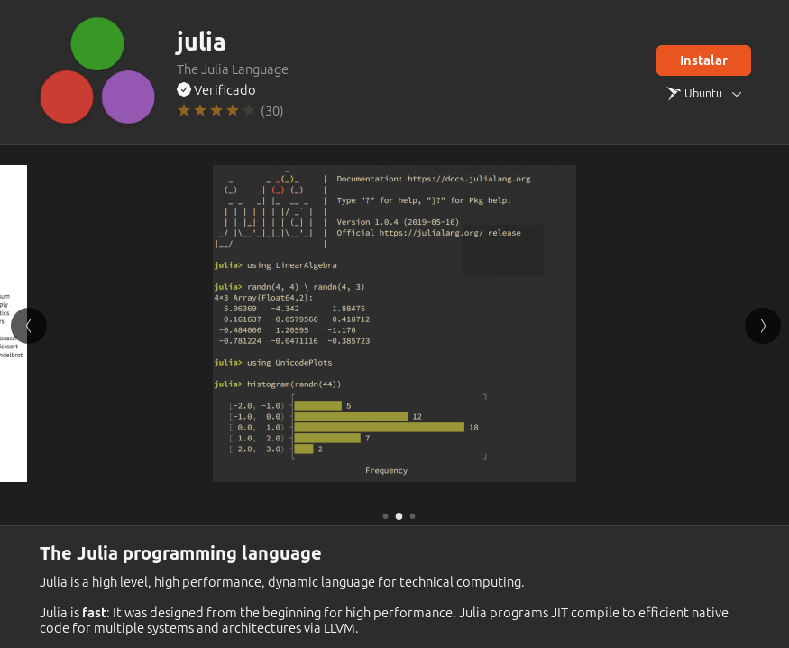
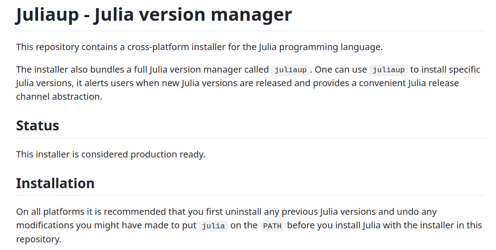
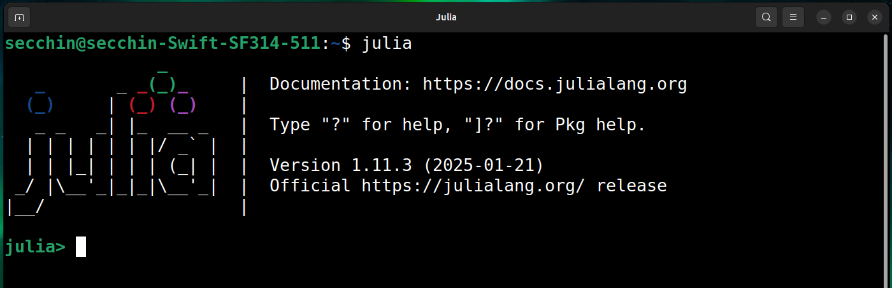
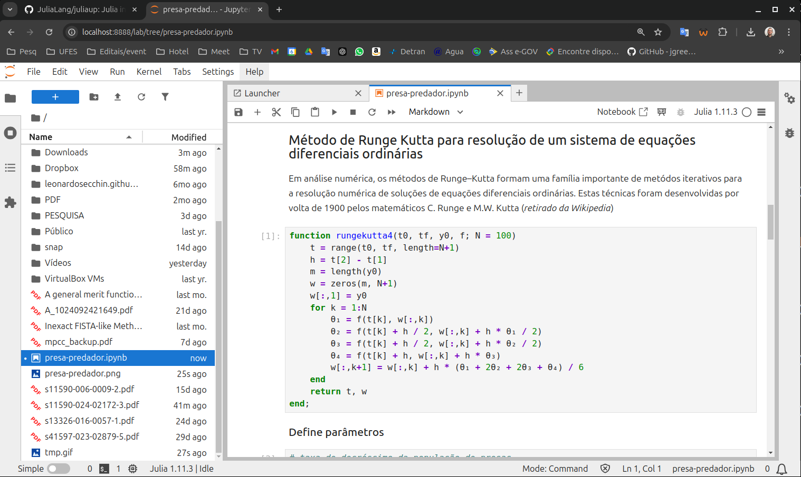
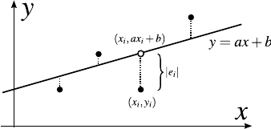
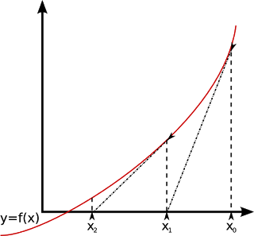
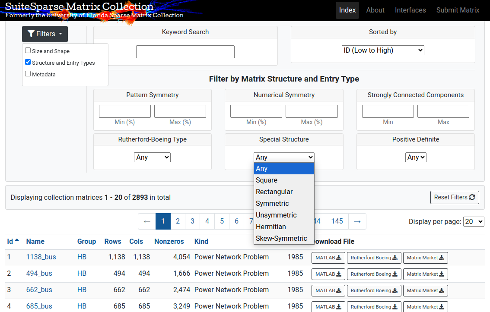

Sumário¶
- Por que escolher Julia?
- Ambiente Julia
- Escrevendo modelos de otimização - pacote
JuMP - Métodos de otimização: exemplos
- Acesso a banco de problemas-teste
- Acesso a solvers de terceiros
- Lendo arquivos estruturados - pacote
DelimitedFiles - Tabelando resultados - pacote
DataFrames - Calculando tempo de execução
Objetivos deste material:
- Apresentar o funcionamento básico da linguagem Julia
- Discutir como Julia pode ser útil na modelagem e resolução de problemas de otimização
- Apresentar os principais pacotes mantidos pela comunidade cientifica voltados à otimização
- Não é um curso de otimização!
- Um curso de otimização com Julia em português no Youtube: vídeos de Abel Siqueira
Pré-requisitos:
- Familiaridade com modelos de otimização
- Métodos básicos (gradientes conjugados, método do gradiente, Newton)
- Desejável conhecimento básico em alguma linguagem de programação
Tempo estimado para realização deste tutorial: 10 horas
Acesso ao material e códigos:
Por que escolher Julia?¶
Algumas linguagens para computação científica¶
C/C++/Fortran¶
- Pró: muito rápido se bem implementado (todo o código é compilado)
- Pró: possui ótimos compiladores livres
- Pró: versatilidade (liberdade total para o programador)
- Pró (Fortran): notação matricial
- Contra: +difícil, tempo longo para aprender a desenvolver bons códigos
- Contra: tarefas simples usualmente resultam em códigos longos
- Contra: não há gerenciamento de memória (risco de falhas de execução)
- Contra: integrar códigos de terceiros é difícil
- Contra: o lado ruim da versatilidade: toda tarefa fica para o programador $\Rightarrow$ aumento do risco de falhas e códigos mal implementados
Python¶
- Pró: linguagem popular, muito código pronto disponível
- Pró: é livre
- Pró: aprendizagem fácil
- Pró: possui boas bibliotecas de alto desempenho (p.ex. para rotinas de álgebra linear)
- Pró: linguagem de propósito geral
- Contra: loops/laços lentos, dado que Python não compila código (linguagem interpretada)
- Contra: não há tantas bibliotecas para otimização
Matlab¶
- Pró: fácil de programar e aprender
- Pró: possui boas bibliotecas para determinados nichos (p.ex. Simulink para sistemas dinâmicos)
- Contra: é pago, incluindo bibliotecas adicionais (e é bem caro!)
- Contra: código puro Matlab é lento, especialmente loops
- Contra: não há muitas bibliotecas para otimização (muito menos que Julia)
Julia¶
Desenvolvida para computação científica de alto desempenho. Criada no MIT, primeira versão publicada em 2012.
Por que usar Julia?¶
- É software livre. Assim, não requer licenças para uso
- É uma linguagem de alto nível, ou seja, é fácil programar e aprender (similar à Matlab)
- Por ser livre, a comunidade científica mantêm uma quantidade grande de códigos prontos (pacotes), que podem ser usados livremente. Isso traz enorme produtividade e economia de tempo
- Possui gerenciador de pacotes que torna a instalação e utilização de pacotes fácil
- Diferentemente do Matlab e Python, Julia compila o código. Isso traz eficiência comparada à linguagens de baixo nível como C/C++/Fortran
- Ao mesmo tempo que é fácil programar, tem foco no desempenho: os pacotes que rodam "por baixo" são implementados utilizando as melhores práticas/técnicas disponíveis (p.ex. rotinas de álgebra linear)
- Tempo de aprendizado curto + produtividade + performance
- Execução de códigos de outras linguagens (C/C++/Fortran) é fácil
- Bom para paralelismo
Ambiente Julia¶
Instalação no GNU/Linux¶
Opção 1: loja de aplicativos do sistema operacional (p.ex. Ubuntu)

Opção 2: script juliaup
Preferível, pois fornece melhor controle de versões. Passos:
- Entre em https://github.com/JuliaLang/juliaup
- Siga as instruções contidas no site

É recomendável instalar a última versão estável (stable release) 64 bits.
Instalação no Windows¶
É recomendável baixar a última versão estável (stable release) 64 bits.
Observação: Alguns pacotes podem não funcionar no Windows.
O ambiente Julia é executado em terminal de comandos (Powershell no Windows, terminal no GNU/Linux). Ao entrar, Julia está apto a receber comandos.

No GNU/Linux, execute "julia" a partir do terminal de comandos.
Modo gráfico¶
Jupyter-lab¶
- Jupyter-lab é um ambiente de desenvolvimento simples, que funciona no navegador de internet.
- Pode ser executado a partir do sistema ou do Julia (veremos como).
- Trabalha com terminal e notebooks, extensão
.ipynb, onde pode-se inserir textos, trechos de códigos, slides etc, tudo no mesmo documento. - Os códigos Julia podem ser executados diretos no Jupyter-lab, onde as saídas do Julia são impressas.
- Oferece uma solução completa: é possível abrir terminais de comando, arquivos de códigos Julia, além de textos e slides.

Visual Studio Code¶
Ambiente completo de desenvolvimento da Microsoft, de uso livre. Possui diversas funcionalidades, porém é mais complexo.
Primeiros exemplos¶
Definindo funções¶
# o caracter # indica comentário, que não são executados!
# função simples escrita de maneira curta
f(x) = x^2
f (generic function with 1 method)
# especificando cabeçalho
function f(x)
return x^2 # retorno da função
end
f (generic function with 1 method)
function h(A,b)
m,n = size(A)
println("A tem ordem $(m) x $(n)")
if n != length(b)
println("Dimensões de A e b incompatíveis!")
return
end
Ab = A*b
return Ab
end
h (generic function with 1 method)
f(3)
9
A = rand(5,3)
b = rand(3)
h(A,b)
A tem ordem 5 x 3
5-element Vector{Float64}:
0.7712474356089665
0.7561420666832622
0.9481109200124083
1.0140691726659998
0.5107178713232025
Variáveis¶
Existem vários tipos de variáveis: números "reais" (Real, Float64, Float32 ...), números inteiros (Int, Int64, Int32 ...), vetores, matrizes, textos, boleano (true/false)...
Ao definir uma variável sem especificar o tipo, o Julia identifica o melhor tipo automaticamente.
a = 1
b = 1.5;
typeof(a)
Int64
typeof(b)
Float64
v = [1; 3; 6]
3-element Vector{Int64}:
1
3
6
u = [1; 3; 6.0]
3-element Vector{Float64}:
1.0
3.0
6.0
Às vezes é interessante forçar um tipo para uma variável passada para uma função de modo a impedir o uso com argumentos inválidos.
function resto(a::Int, b::Int) # a e b devem ser inteiros
r = mod(a,b)
return r
end
resto (generic function with 1 method)
resto(10,3)
1
O comando abaixo acarreta em erro pois resto não aceita parâmetros não inteiros.
resto(10.0,3)
MethodError: no method matching resto(::Float64, ::Int64) The function `resto` exists, but no method is defined for this combination of argument types. Closest candidates are: resto(::Int64, ::Int64) @ Main In[11]:1 Stacktrace: [1] top-level scope @ In[13]:1
Uma das características importantes do Julia é o múltiplo despacho: podemos definir uma mesma função para diferentes tipos de cabeçalho. Isso é interessante por questões de eficiência e organização do código.
# função resto com parâmetros reais
function resto(a::Real, b::Real)
println("Os dados de entrada são números reais.")
r = mod(floor(a),floor(b)) # floor(x) é o maior inteiro menor ou igual a x
return r
end
resto (generic function with 2 methods)
# ambos parâmetros são inteiros, Julia executa a primeira versão
resto(10,3)
1
# Um dos parâmetros é não inteiro, Julia executa a segunda versão.
# O segundo parâmetro 3 é convertido para Real.
resto(10.0,3)
Os dados de entrada são números reais.
1.0
# Ambos parâmetros são não inteiros
resto(10.5,3.56)
Os dados de entrada são números reais.
1.0
Se ... então¶
Segue a mesma lógica de outras linguagens. Sintaxe:
if [condição]
...
else
...
end
x = 5
if x > 4
println("x é grande...")
else
println("x é pequeno")
end
x é grande...
Observação:
= é usado para atribuir valores à variáveis. Para comparar o valor de duas variáveis, use ==
if x == 5
println("x é igual a 5")
end
x é igual a 5
Laços¶
Seguem a lógica de várias outras linguagens.
# for: laço de tamanho pré-determinado
for i in 1:5
print(i, " ")
end
1 2 3 4 5
# while: laço de tamanho indeterminado
k = rand(3:6) # sorteia um número inteiro entre 3 e 6
while (k > 0)
print(k, " ")
k = k - 1
end
3 2 1
Laços podem ser finalizados com break. Interessante para parar um while ao verificar uma condição de parada de um método.
function parada(x)
pare = false
if abs(x) < 1e-4 # o mesmo que abs(x) < 0.0001
pare = true
end
return pare
end
maxiter = 5; k = 0; x = 1.0
while (true)
println("Iteração $(k), x = $(x)")
if (k >= maxiter)
println("Número máximo de iterações atingido.")
break
end
x /= 10 # o mesmo que x = x/10
if parada(x)
println("Critério de parada atingido, x = $(x)")
break
end
k += 1 # o mesmo que k = k + 1
end
Iteração 0, x = 1.0 Iteração 1, x = 0.1 Iteração 2, x = 0.01 Iteração 3, x = 0.001 Iteração 4, x = 0.0001 Critério de parada atingido, x = 1.0e-5
Vetores e matrizes¶
Em Julia, vetores são sempre vetores-colunas.
; separa linhas
espaço separa colunas
# Definindo um vetor
v = [1;2;3;4;5]
5-element Vector{Int64}:
1
2
3
4
5
# Definindo uma matriz
A = [1.0 2.5 3.9; 4.0 5.9 6.7; 7.0 8.0 9.1]
3×3 Matrix{Float64}:
1.0 2.5 3.9
4.0 5.9 6.7
7.0 8.0 9.1
Alguns comandos básicos:
n = 3; m = 2;
# sorteia um vetor de tamanho n com entradas entre 0 e 1
w = rand(n)
3-element Vector{Float64}:
0.6262618010649632
0.2241552685602547
0.2543308313254464
# sorteia uma matriz m x n com entradas entre 0 e 1
M = rand(m,n)
2×3 Matrix{Float64}:
0.461967 0.41233 0.76084
0.554147 0.0328755 0.564374
Operações
A = rand(3,5);
B = rand(5,4);
C = rand(3,5);
a = rand(5);
b = rand(5);
# Adicão/multiplicação por escalar
S = 3*A - 1e-2*C
3×5 Matrix{Float64}:
0.0965386 2.91675 1.04697 2.63674 1.86536
1.48802 1.84019 1.31817 2.36387 0.29317
1.3179 2.97671 0.0836621 1.47259 0.776908
C = A*b
3-element Vector{Float64}:
1.743280609728288
1.465582721392344
1.3670726178744568
C = A*B
3×4 Matrix{Float64}:
1.37781 2.37381 0.884786 0.829222
1.47045 1.80745 0.940678 0.736098
1.42229 1.66647 0.939635 0.826279
# Transposição
At = A'
5×3 adjoint(::Matrix{Float64}) with eltype Float64:
0.0347421 0.496829 0.440563
0.973222 0.616071 0.992298
0.351519 0.441372 0.0298775
0.879594 0.790091 0.49314
0.624929 0.100562 0.259439
Matrizes especiais
A = [1 2 3; 4 5 6; 7 8 9]
3×3 Matrix{Int64}:
1 2 3
4 5 6
7 8 9
using LinearAlgebra
# Matriz simétrica
Symmetric(A)
3×3 Symmetric{Int64, Matrix{Int64}}:
1 2 3
2 5 6
3 6 9
# Usando o triângulo inferior
Symmetric(A, :L)
3×3 Symmetric{Int64, Matrix{Int64}}:
1 4 7
4 5 8
7 8 9
# Matriz identidade de ordem n
using LinearAlgebra
n = 3
I(n)
3×3 Diagonal{Bool, Vector{Bool}}:
1 ⋅ ⋅
⋅ 1 ⋅
⋅ ⋅ 1
# Matriz diagonal
D = Diagonal([1;4;6])
3×3 Diagonal{Int64, Vector{Int64}}:
1 ⋅ ⋅
⋅ 4 ⋅
⋅ ⋅ 6
# Triangular inferior
tril(A)
3×3 Matrix{Int64}:
1 0 0
4 5 0
7 8 9
# Triangular superior
triu(A)
3×3 Matrix{Int64}:
1 2 3
0 5 6
0 0 9
# Vetor/Matriz de 1's
w = ones(10);
W = ones(10,4);
# Vetor/Matriz de zeros
z = zeros(10);
Z = zeros(10,4);
Atenção!
Suponha que queiramos fazer uma cópia de um vetor a em um vetor b...
a = rand(2)
2-element Vector{Float64}:
0.24032062713300106
0.22113001430010304
b = a
2-element Vector{Float64}:
0.24032062713300106
0.22113001430010304
Aparentemente, b é uma cópia de a. Porém, o trecho de código acima não copia a na memória, apenas faz uma referência à a. Assim, se alterarmos b, alteraremos a:
b[1] = 0
a
2-element Vector{Float64}:
0.0
0.22113001430010304
Uma cópia na memória pode ser feita:
a = rand(2)
b = deepcopy(a) # aloca uma nova cópia de "a" memória
2-element Vector{Float64}:
0.9744999424169607
0.26642635655944336
# alterando b
b[1] = 0
b
2-element Vector{Float64}:
0.0
0.26642635655944336
# a não é alterado
a
2-element Vector{Float64}:
0.9744999424169607
0.26642635655944336
O Julia evita fazer cópias na memória por uma questão de eficiência. Assim, o programador deve decidir conscientemente alocar nova memória. Evite fazer cópias quando desnecessário, sobretudo dentro de laços, pois isso deixará seu código mais lento.
Alocando vetores
n = 2
# alocando um vetor e preenchendo com zeros
v = zeros(n)
2-element Vector{Float64}:
0.0
0.0
# alocando um vetor com mesma estrutura de v,
# mas sem preencher (só reserva o espaço de memória)
u = similar(v)
2-element Vector{Float64}:
6.57821864832643e-310
6.578218648328e-310
O comando similar reserva um espaço de memória, mas não grava as coordenadas (os valores que aparecem acima significam nada).
No trecho acima, u tem o mesmo tamanho e tipo numérico que v. Isto é, u é um vetor de $\mathbb R^2$ com dados do tipo Float64 (numero real de precisão dupla).
Ao não gravar as coordenadas de u, economizamos tempo. Isso é útil quando apenas necessitamos reservar um espaço de memória para só depois gravar as coordenadas. Muito útil em implementações de métodos de otimização, como vamos utilizar mais a frente.
ATENÇÃO: Se executarmos u = v, isso substituirá o vetor alocado pela referência à v, como antes.
Para copiar v sobre u, precisamos gravar coordenada a coordenada:
# primeira forma: fazer um laço que corre todas as coordenadas
for i in 1:length(u)
u[i] = v[i]
end
Uma outra forma de copiar coordenada a coordenada é a notação .=. Ela é preferível pois é mais simples e permite que internamente o Julia aplique otimizações no código que seriam trabalhosas fazermos à mão.
u .= v
2-element Vector{Float64}:
0.0
0.0
Indexação¶
A manipulação de matrizes e vetores no Julia é muito rica.
Exemplos:
v = [10;20;30;40;-50];
v[4] # coordenada 4 de v
40
v[3:5] # vetor coordenadas de 3 a 5
3-element Vector{Int64}:
30
40
-50
coords = [1;3;5] # coordenadas 1, 3 e 5
v[coords]
3-element Vector{Int64}:
10
30
-50
v[v .> 30] # coordenadas maiores que 30
1-element Vector{Int64}:
40
v[(v .> 30) .| (v .< 0)] # coordenadas maiores que 30 ou menores que 0
2-element Vector{Int64}:
40
-50
# coordenadas indicadas por vetores de V ou F
C = [true;false;false;true;true]
v[C]
3-element Vector{Int64}:
10
40
-50
# índices correspondentes à negação de C
v[.!C]
2-element Vector{Int64}:
20
30
Podemos atribuir valor a qualquer vetor, coordenada, ou subvetor.
v = [10;20;30;40;-50;35];
v[1] = 312
312
v
6-element Vector{Int64}:
312
20
30
40
-50
35
# Atribuindo zero para as entradas de 3 a 5.
# Usamos .= para vetores ao invés de = para mudar 1 coordenada
v[3:5] .= 0;
v
6-element Vector{Int64}:
312
20
0
0
0
35
O mesmo vale para matrizes. É possível ler/mudar linhas e colunas.
A = [1 2 3; 4 5 6; 7 8 9]
3×3 Matrix{Int64}:
1 2 3
4 5 6
7 8 9
A[1,2] = 0;
A
3×3 Matrix{Int64}:
1 0 3
4 5 6
7 8 9
# mudando a coluna 1 de A
A[:,1] .= [-1;-2;-3];
A
3×3 Matrix{Int64}:
-1 0 3
-2 5 6
-3 8 9
# alterando as entradas 2 e 3 d linha 3
A[3,2:3] .= [10;20];
A
3×3 Matrix{Int64}:
-1 0 3
-2 5 6
-3 10 20
Códigos salvos em arquivos¶
Todo código escrito em Julia pode ser salvo em arquivos para ser posteriormente carregado.
A extensão dos arquivos de código é .jl
Para carregar os códigos de um arquivo salvo, basta executar
include("arquivo.jl")
Se o arquivo está dentro de uma pasta, deve-se passar o caminho relativo contendo o nome da pasta.
Para facilitar, você pode salvar todos os arquivos .jl numa mesma pasta.
Exemplo
# Inclui o arquivo "codigo.jl"
include("codigo.jl");
Nele, estão definidas duas funções teste e teste2 e um vetor dados. Ao incluirmos, esses objetos ficam disponíveis.
dados
4-element Vector{Float64}:
3.0
4.0
7.2
6.9
teste()
Esta função está escrita no arquivo codigo.jl
teste2(dados)
Vetor de entrada: [3.0, 4.0, 7.2, 6.9]
teste2([2;5;7;8;12])
Vetor de entrada: [2, 5, 7, 8, 12]
Observações:
- Você pode usar qualquer editor tipo "bloco de notas" para escrever arquivos
.jl. O Jupyter-lab possui um editor que edita/cria arquivos do tipo. - Você pode incluir arquivos em arquivos, isto é, o comando
includepode ser usado dentro de um arquivo.jlpara incluir outro arquivo. Se por exemploarquivo1.jlincluearquivo2.jl, ao carregararquivo1.jl,arquivo2.jltambém será incluído. - A separação de códigos em vários arquivos é uma questão de organização apenas. Você quem decidirá como organizar seu código!
Gerenciamento de pacotes¶
Além das funções básicas que o Julia traz nativamente, podemos usar funções/algoritmos prontos para tarefas específicas.
Um pacote nada mais é que um conjunto de intruções pré-implementadas para um determinado fim.
Por ser software livre, qualquer pessoa pode implementar pacotes. A comunidade de otimização é bastante ativa, e logo há inúmeros pacotes disponíveis para uso dentro do Julia.
O gerenciador de pacotes pode ser acessado de dentro do Julia teclando ]
- Adicionar um pacote:
]add PACOTE
Isso fará o download automático e instalará o pacote. Uma vez feito, não é necessário instalar novamente o pacote, ele sempre estará disponível para uso - Remover um pacote:
]rm PACOTE - Atualizar todos os pacotes instalados:
]up
Para uma lista de pacotes disponíveis, consulte https://juliapackages.com
Alguns pacotes de interesse¶
LinearAlgebra
Rotinas típicas de álgebra linear (operações eficientes com vetores/matrizes, fatorações, resolução de sistemas lineares)SparseArrays
Armazenamento eficiente de matrizes esparsasPlots
Plotagem de figuras/gráficosDataFrames
Ferramentas para manipulação de dados organizados em tabelasJuMP
Escrita de modelos de otimização de "forma natural"NLPModels,NLPModelsJuMP
Cálculo automático de derivadas dos dados de um modelo de otimização
BenchmarkProfiles
Construção de perfis de desempenho como descritos em
E. Dolan and J. Moré, Benchmarking Optimization Software with Performance Profiles, Mathematical Programming 91, pages 201–213, 2002BenchmarkTools
Contagem precisa de tempo de CPU e gasto de memória de um trecho de código. O pacote faz médias de tempo automaticamente.Graphs
Represetanção e manipulação de grafos. Para plotagem de grafos escritos com o pacote, existem algumas opções. Consulte https://juliagraphs.org/Graphs.jl/stable/first_steps/plotting/Convex
Escrita de modelos com estruturas especiais para otimização convexa (como restrições de semi-positividade de matrizes)ForwardDiff
Diferenciação automática de funções. Calcula derivadas de orden 1, 2 e superiores. Para modelos de otimização, prefiraNLPModels.
A partir de então, o pacote estará disponível para uso sempre que requisitado.
O pacote deverá ser carregado antes do uso com o comando
using PACOTE
Exemplo:
n = 100;
x = rand(n);
# carrega pacote LinearAlgebra (previamente instalado)
using LinearAlgebra
# agora o comando norm está disponível!
norma = norm(x)
println("norma de x = ",norma)
norma de x = 5.617881123243661
Executando códigos¶
Ao executar uma função/código, principalmente aqueles carregados de arquivos .jl, Julia irá compilá-lo na primeira execução. É como se o Julia executasse um compilador ao executar uma função pela primeira vez.
Portanto, é normal que a primeira execução demore mais tempo.
As execuções seguintes serão rápidas, justamente porque o código já estará compilado.
A inserção de pacotes pela primeira vez também costuma levar um tempo maior. Depois de inseridos, eles estarão carregados na memória para rápida execução.
Você perceberá isso na medida em que usa o Julia.
Reforçando: depois de compilados, os códigos em Julia rodam MUITO mais rápido que Matlab! Em processos iterativos, como os algoritmos de otimização, isso traz grande ganho em eficiência.
Mais exemplos¶
Plotando gráficos - pacote Plots¶
using Plots
WARNING: using Plots.coords in module Main conflicts with an existing identifier.
x = -1:0.05:1; # intervalo [-1,1] com passo 0.05
# função y = x^2
y(x) = x^2;
fig = plot(x, y, size=(400,300)) # constrói a figura
![No description has been provided for this image]()
Plots aceitam personalização e sobreposição na mesma figura (observe os comandos com !)
using LaTeXStrings # textos com comandos LaTex
# legenda em LaTex
fig = plot(x, y, label=L"f(x)=x^2", color=:black, size=(400,200))
# pontos laranja em cada x_i
fig = scatter!(x, y, label="", color=:red);
# anotação na posição (0,0.6)
fig = annotate!(0, 0.6, L"\textrm{área}=\int_{-1}^1 x^2 \, dx");
# salva a figura
savefig(fig, "exemplo.png");
# exibe na tela
display(fig);
![No description has been provided for this image]()
Dica: no Julia, comandos seguidos de ! atualizam objetos já incializados anteriormente. No exemplo acima, os comandos com exclamação atualizam fig sem descartar plots anteriores.
Algumas opções de personalização¶
Textos:
- Texto do título:
title="Texto do título" - Texto dos eixos:
xlabel="x",ylabel="y" - Texto da legenda:
label="f"
Eixos:
- Marcas nos eixos:
xtick=(0:0.5:10, ["\$ $(i) \$" for i in 0:0.5:10]),ytick=-1:0.5:1 - Limites nos eixos:
xlims=(0,10),ylims=(-1,1) - Escala dos eixos:
xscale/yscale=:identity :log10 - Forçar mesma proporção entre eixos:
aspect_ratio=:equal
Fontes:
- Tamanho da fonte do título:
titlefont=font(40) - Tamanho da fonte dos eixos:
xguidefont=font(30), yguidefont=font(20)ouguidefont=font(20) - Tamanho da fonte das marcas:
xtickfont=font(15), ytickfont=font(20)outickfont=font(10) - Tamanho da fonte da legenda:
legendfont=font(12) - Mudar tudo para fonte padrão do Latex:
fontfamily="Computer Modern"
Linhas dos gráficos:
- Espessura da linha do gráfico em pixels:
lw=3 - Estilo da linha do gráfico:
ls=:solid(padrão):dot:dash:auto:dashdot:dashdotdot - Cor da linha do gráfico:
color=:black:red:blue:yellow:cyan:orange... oucolor=RGB(.1, .3, 1) - Marcas no gráfico:
markershape=:none(padrão):auto:circle:rect:star5:diamond:hexagon:cross:xcross:utriangle:dtriangle:rtriangle:ltriangle:pentagon:heptagon:octagon:star4:star6:star7:star8:vline:hline:+ - Tamanho das marcas do gráfico em pixels:
markersize=4
Outras configurações da legenda:
- Posição da legenda:
legend=:right:left:top:bottom:inside:best:topright:topleft:bottomleft:bottomright - Ocultar legenda:
leg=false - Cor do fundo da legenda:
background_color_legend=:[COR]oubackground_color_legend=:transparent(fundo transparente)
Imagem:
- Tamanho da imagem em pixels:
size=(500,400) - Preencher área abaixo do gráfico:
fill=(0,:orange,0.5)(altura referência $y = 0$, cor laranja, 50% de opacidade)
Resolvendo sistemas lineares de pequeno/médio porte¶
A resolução de sistemas lineares no Julia pode ser feita pelo comando \.
Exemplo:
using LinearAlgebra
A = [3 2 1;
4 6 5;
7 8 9]
b = [0; 1; 2]
# Resolvendo o sistema Ax = b
x = A\b
3-element Vector{Float64}:
-0.06666666666666665
-0.06666666666666674
0.33333333333333337
# conferindo se a norma do resíduo é ≈ 0
norm(A*x - b)
5.551115123125783e-17
\ implementa várias técnicas: dependendo da matriz $A$, Julia decide qual a melhor forma de resolver $Ax=b$. Por exemplo,
- Se $A$ é triangular, então o sistema é resolvido por substituição ($A$ não é fatorada)
- Se $A$ for quadrada e não triangular, $Ax=b$ é resolvido usando fatoração LU
- Se $A$ for retangular,
x = A\bserá a solução de quadrados mínimos computada usando fatoração QR - Se $A$ for esparsa, LDL$^t$ é usada
Portanto, é útil fornecer a estrutura da matriz caso você já saiba! Isso resultará em ganho de eficiência.
Exemplo:
using LinearAlgebra
# Matriz triangular superior
A = [3 2 1;
0 6 5;
0 0 9]
3×3 Matrix{Int64}:
3 2 1
0 6 5
0 0 9
b = [1;2;3]
x = A\b # apesar de A ser triangular, é tratada como uma matriz qualquer
3-element Vector{Float64}:
0.1851851851851852
0.05555555555555558
0.3333333333333333
x = triu(A)\b # aqui dizemos ao Julia que A é triangular
3-element Vector{Float64}:
0.1851851851851852
0.05555555555555558
0.3333333333333333
Instalação e execução do Jupyter-lab¶
Uma maneira de instalar o Jupyter-lab é a partir do próprio Julia:
- Abra o Julia
- Instale o pacote
IJulia(]add IJulia)
Isso instalará o Jupyter-lab e o núcleo do Julia para o Jupyter-lab, que permite a execução de comandos Julia direto no ambiente gráfico. A instalação é feita uma única vez.
Com o IJulia instalado, você poderá abrir o Jupyter-lab a partir do menu de programas do sistema operacional. Caso não seja possível, uma opção é abri-lo a partir do Julia:
- Abra o Julia
- Carregue o pacote
IJulia(using IJulia) - Execute
jupyterlab()
Como obter ajuda para pacotes e comandos?¶
As principais fontes de ajuda são:
- Para ajuda com comandos de um pacote específico, consulte a página do pacote. Ela geralmente traz instruções de uso e a documentação completa
- Um atalho que geralmente resolve é o ambiente de ajuda do Julia: teclando
?COMANDO, uma ajuda com exemplos é exibida - Fóruns na internet
- Documentação oficial do Julia (https://docs.julialang.org/en/v1)
Usualmente, tudo começa com uma busca do tipo "como fazer tal coisa no julia?"
Exemplo:
- Como computar a decomposição SVD de uma matriz?...
- Um dos pacotes que faz isso é o
LinearAlgebra, que traz o comandosvd(pode não ser o único pacote) - Experimente executar no Julia:
- Instale
LinearAlgebracaso não o tenha using LinearAlgebra?svd
- Instale
Dicas úteis¶
- O terminal de comandos do Julia comporta-se como o GNU/Linux. Você pode começar a digitar um comando e teclar TAB --> TAB que verá as terminações possíveis. Isso dá agilidade e ajuda a lembrar dos comandos
- Além do próprio Julia, os desenvolvedores de pacotes lançam novas versões com correções e melhorias. Assim, é bom de tempos em tempos atualizá-los executando
]up. O download e instalação das novas versões é automático - Várias funções no Julia podem ser aplicadas a cada componente de uma lista (vetores, por exempo). Geralmente isso é indicado com um ponto depois do comando. Por exemplo:
abs(-1.0)retorna o número $|-1|$abs.([-1.0; 2.0; -8.5])retorna o vetor dos valores absolutos de cada entrada, isto é, a funçãoabsé aplicada a cada componente do vetor[-1.0; 2.0; -8.5]
abs(-1.0)
1.0
abs.([-1.0; 2.0; -8.5])
3-element Vector{Float64}:
1.0
2.0
8.5
Mensagem importante¶
Como em qualquer linguagem, você aprenderá com a prática quais pacotes/comandos são adequados para as tarefas que costuma realizar!
Com o tempo, você também começará a buscar melhores práticas de programação (visando eficiência, por exemplo) e pacotes mais adequados.
Isso só você pode fazer!!!
Exercícios¶
Exercício 1: Reproduza todos os comandos vistos até aqui. Familharize-se com a manipulação de vetores e matrizes, condicionais se...então e laços. Recorra à ajuda contida no Julia ou em outra fonte caso necessário.
Exercício 2: Instale os seguintes pacotes no seu Julia:
LinearAlgebra, SparseArrays, Plots, DataFrames, JuMP, NLPModels, NLPModelsJuMP, MatrixDepot, Printf, DelimitedFiles, GLPK, NLPModelsIpopt, NLPModelsAlgencan, CUTEst
Exercício 3: Calcule a decomposição a valores singulares (SVD) de matrizes construídas randomicamente. Use o comando svd do pacote LinearAlgebra. Estude os exemplos contidos na ajuda do comando. Compare o produto $U\Sigma V^t$ das matrizes obtidas na decomposição com a matriz original.
Exercício 4: Procure um comando que compute a decomposição QR de uma matriz. Aplique em matrizes geradas randomicamente.
Exercício 5: Crie um arquivo .jl de código com 2 funções que recebam uma matriz e retornem as fatorações SVD e QR. Carregue-o no Julia e aplique as funções à diferentes matrizes.
Escrevendo modelos de otimização - pacote JuMP¶
Vamos considerar o modelo geral de otimização
\begin{align*} \min_x \, & f(x)\\ \text{s.a. }& h_i(x)=0, \quad i=1,\ldots,m\\ &g_j(x)\leq 0, \quad j=1,\ldots,p\\ &l_i\leq x_i\leq u_i, \quad i=1,\ldots,n \end{align*}
Vamos supor que todas as funções sejam pelo menos de classe $\mathcal C^1$.
O pacote JuMP permite escrever modelos de otimização linear, não linear, restritos, irrestritos, com variáveis contínuas e/ou discretas de forma natural.
Exemplo 1¶
\begin{equation*} \min_x x_1^2 + x_2^2 \end{equation*}
# Carrega o pacote. ATENÇÃO: Julia faz distinção entre
# maiúsculas e minúsculas, portanto jump, Jump etc não funcionará
using JuMP
# cria o modelo em branco
P1 = Model();
# variáveis x1 e x2
@variable(P1, x[1:2])
2-element Vector{VariableRef}:
x[1]
x[2]
# função objetivo não linear, sentido de "minimização"
@objective(P1, Min, x[1]^2 + x[2]^2)
# imprime o modelo para verificação
print(P1)
Exemplo 2¶
\begin{align*} \min_x & \, \sum_{i=1}^m (x_i-5)^2 + \sum_{i=1}^{m-1} (x_{i+1} - x_i)^3\\ \text{s.a.} \ & 1\leq x_i\leq 4, \quad i=1,\ldots,m \end{align*}
using JuMP
m = 3
P2 = Model()
# variáveis e seus limitantes
@variable(P2, 1 <= x[1:m] <= 4)
# função objetivo
@objective(P2, Min, sum((x[i]-5)^2 for i in 1:m) + sum((x[i+1]-x[i])^3 for i in 1:m-1) )
Observe que a escrita das somas são feitas "como se escreve no papel" com sum
Internamente, as somas são expandidas.
print(P2)
Exemplo 3¶
\begin{align*} \min_x \, & (x_1-2)^2 + (x_2-1)^2\\ \text{s.a. } & x_1 + x_2 - 2\leq 0\\ &x_1^2-x_2\leq 0 \end{align*}
using JuMP
P3 = Model()
@variable(P3, x[1:2])
# FO não linear
@objective(P3, Min, (x[1]-2)^2 + (x[2]-1)^2)
# Restrição linear
@constraint(P3, x[1] + x[2] - 2 <= 0)
# Restrição não linear
@constraint(P3, x[1]^2 - x[2] <= 0);
Exemplo 4¶
Um investidor quer aplicar seu capital em produtos financeiros (ações, renda fixa etc) selecionados de um portifólio de opções.
O investidor espera ter um retorno mínimo predefinido, e sua intenção é minimizar o risco considerando o histórico de retornos de cada opção de investimento.
Dados do problema:
- $n$: número de produtos no portifólio;
- $\sigma\in \mathbb R^n$: vetor dos retornos esperados de cada produto;
- $Q\in \mathbb R^{n\times n}$: matriz de covariância. A entrada $q_{ij}$ mede a interdependência entre as opções $i$ e $j$. $Q$ será simétrica e semidefinida positiva;
- $R>0$: retorno esperado pelo investidor;
- $u\in [0,1]^n$: vetor com o máximo percentual a ser investido em cada produto;
- $N\in \mathbb Z_+$: número máximo de produtos selecionados. Evidentemente, $N < n$.
Variáveis:
- $x_i\geq 0$: fração do montante total investido no produto $i$, $i=1,\ldots,n$;
- $y_i\in [0,1]$: indica se o produto $i$ foi selecionado ($y_i = 0$) ou não ($y_i\neq 0$), para $i=1,\ldots,n$.
Modelo:
\begin{align} \min_{x, y} \ & x^t Q x\\ \text{sujeito a} \ & \sum_{i=1}^n \sigma_ix_i\geq R\\ &\sum_{i=1}^n x_i = 1\\ &x_iy_i=0, & i=1,\ldots,n\\ &\sum_{i=1}^n y_i \geq n - N\\ &0\leq x_i\leq u_i, \quad 0\leq y_i\leq 1, & i=1,\ldots,n \end{align}
- Função objetivo: diversifica os produtos (diminuição do risco);
- 1a restrição: o retorno total esperado é pelo menos $R$;
- 2a restrição : diz que as frações do investimento somam o montante total a ser investido;
- 3o bloco de restrições: diz que se não investimos no produto $i$ ($x_i=0$), então é permitdo $y_i>0$;
- 4a restrição: busca contar os produtos não selecionados/investidos, dizendo que eles devem ser, no mínimo, $n-N$ (assim, não selecionamos mais que $N$ produtos);
- 5o bloco de restrições: limitantes das variáveis.
Escrevendo o modelo:
# Dados de entrada: n, sigma, Q, R, u, N
function modelo(n,sigma,Q,R,u,N)
P = Model()
# Variáveis
@variable(P, x[1:n] >= 0) # frações do montante investido
@variable(P, 0 <= y[1:n] <= 1) # investe no ativo i? (variável binária: 0=não, 1=sim)
@objective(P, Min, x'*Q*x) # Função objetivo quadrática
@constraint(P, sum(sigma[i]*x[i] for i in 1:n) >= R) # 1a restrição
@constraint(P, sum(x[i] for i in 1:n) == 1) # 2a restrição
for i in 1:n # 3o bloco de restrições
@constraint(P, x[i]*y[i] == 0)
end
@constraint(P, sum(y[i] for i in 1:n) >= n - N) # 4a restrição
for i in 1:n # 5a restrição
set_upper_bound(x[i], u[i])
end
return P
end
modelo (generic function with 1 method)
# Exemplo
n = 3
sigma = ones(n)
Q = Symmetric(rand(n,n)) + 2.0*I(n)
R = 10
u = rand(n)
N = 2
P4 = modelo(n, sigma, Q, R, u, N);
print(P4)
Acessando dados do problema e suas derivadas - pacotes NLPModels e NLPModelsJuMP¶
Uma coisa muito conveniente é que não precisamos calcular derivadas de primeira e segunda ordens da função objetivo e restrições à mão, o Julia faz isso por nós. Para tanto, convertemos o modelo Julia para a estrutura NLPModels através do pacote NLPModelsJuMP.
Isso é extremamente conveniente pois métodos costumam exigir cálculo de derivadas!
Exemplo:
\begin{align*} \min_x \, & f(x) = (x_1-2)^2 + (x_2-1)^2\\ \text{s.a. } & g_1(x) = x_1 + x_2 \leq 2\\ &g_2(x) = x_1^2-x_2\leq 0 \end{align*}
using JuMP, NLPModels, NLPModelsJuMP
P3 = Model()
@variable(P3, x[1:2])
@objective(P3, Min, (x[1]-2)^2 + (x[2]-1)^2)
@constraint(P3, x[1] + x[2] <= 2)
@constraint(P3, x[1]^2 - x[2] <= 0);
nlp = MathOptNLPModel(P3); # CONVERTEMOS O MODELO JuMP PARA NLPModels
x = [1.0; 1.0];
obj(nlp, x) # função objetivo em x
1.0
grad(nlp, x) # gradiente da função objetivo em x
2-element Vector{Float64}:
-2.0
0.0
hess(nlp, x) # hessiana da função objetivo em x
2×2 Symmetric{Float64, SparseArrays.SparseMatrixCSC{Float64, Int64}}:
2.0 ⋅
⋅ 2.0
cons(nlp, x) # restrições em x (sem o termo livre)
2-element Vector{Float64}:
2.0
0.0
ATENÇÃO: cons não leva em conta os limitantes das restrições!
O vetor de limitantes superiores das restrições é gravado em nlp.meta.ucon, enquanto o vetor de limitantes inferiores em nlp.meta.lcon.
No exemplo anterior, podemos fazer
cons(nlp, x) .- nlp.meta.ucon # avalia g(x) - u
2-element Vector{Float64}:
0.0
0.0
O Julia não considera os limitantes ao avaliar as restrições com cons para evitar ambiguidade.
Exemplo: suponha que uma restrição tenha limitante superior e inferior:
$L \leq c(x)\leq U$.
Então "avaliar essa restrição" é ambiguo porque, na verdade, são duas restrições: $L - c(x)\leq 0$ e $c(x) - U\leq 0$
Assim:
cons(nlp, x)avalia $c(x)$ sem limitantes.nlp.meta.lcon .- cons(nlp, x)avalia $L - c(x)$cons(nlp, x) .- nlp.meta.uconavalia $c(x) - U$
Jacobiano: $\quad$ $ J(x) = \left[ \begin{array}{c} \nabla g_1^t(x)\\ \vdots \\ \nabla g_p^t(x) \end{array} \right] $
jac(nlp, x) # Jacobiano em x
2×2 SparseArrays.SparseMatrixCSC{Float64, Int64} with 4 stored entries:
1.0 1.0
2.0 -1.0
\begin{align*} \min_x \, & f(x)\\ \text{s.a. }& h_i(x)=0, \ i=1,\ldots,m\\ &g_j(x)\leq 0, \ j=1,\ldots,p \end{align*}
Função lagrangiano: $$ L(x,\lambda) = f(x) + \sum_{i=1}^m \lambda_i^h h_i(x) + \sum_{j=1}^p \lambda_j^g g_j(x) $$
Hessiana da função lagrangiano: $$ \nabla^2_{xx} L(x,\lambda) = \nabla^2 f(x) + \sum_{i=1}^m \lambda_i^h \nabla^2 h_i(x) + \sum_{j=1}^p \lambda_j^g \nabla^2 g_j(x) $$
# Hessiana da função lagrangeano do exemplo em x = [1.0;1.0] com multiplicador λ^g = [0.5;1.5]
hess(nlp, x, [0.5;1.5])
2×2 Symmetric{Float64, SparseArrays.SparseMatrixCSC{Float64, Int64}}:
5.0 ⋅
⋅ 2.0
As vezes precisamos apenas produto "hessiana x vetor" ou "jacobiana x vetor". É a opção preferível por questões de eficiência (calcular produto matriz-vetor não requer armazenar a matriz na memória).
# ∇^2 L(x,λ) * v
λ = [0.5;1.5]
v = [1.0;-1.0]
hprod(nlp, x, λ, v)
2-element Vector{Float64}:
5.0
-2.0
jprod(nlp, x, v) # J(x) * v
2-element Vector{Float64}:
0.0
3.0
u = [5.0;4.0]
jtprod(nlp, x, u) # J(x)^t * u
2-element Vector{Float64}:
13.0
1.0
Mais detalhes: https://github.com/JuliaSmoothOptimizers/NLPModels.jl
Exercícios¶
Exercício 6:$^1$ Considere a função de Rosenbrock $f(x) = 100(x_2 − x^2_1)^2 + (1 − x_1)^2$. Escreva o modelo JuMP e converta para a estrutura NLPModels. Estude a otimalidede do ponto $x=(1,1)$ calculando no Julia gradiente e hessiana.
Dica: você pode calcular todos os autovalores de uma matriz $A$ executando using LinearAlgebra; eigvals(Matrix(A))
Exercício 7: Repita o exercício anterior com a função de Rosenbrock de $n$ variáveis dada por $$ f(x) = \sum_{i=1}^{n-1} 100(x_{i+1} − x^2_i)^2 + (1 − x_i)^2 $$ Escolha $n\geq 3$ (por exemplo, $n=10$). Não expanda a soma à mão!
Exercício 8:$^1$ Considere a função $f(x) = x_1^2 - x_1x_2 + 2x_2^2 − 2x_1 + e^{x_1 + x_2}$. Encontre uma direção $d\in \mathbb R^2$ tal que $\nabla f(0,0)^td<0$ (use o Julia para fazer a conta).
Exercício 9: Considere os pontos $$(x_1,y_1)=(1,1), \quad (x_2,y_2)=(2,2), \quad (x_3,y_3)=(3,1) \quad \textrm{e} \quad (x_4,y_4)=(4,3)$$ do plano $xy$. A reta $y=ax+b$ que melhor aproxima esses pontos é a reta cujos coeficientes minimizam a função de erro $$f(a,b)=\sum_{i=1}^4 e_i^2,$$ onde $e_i$ é a diferença entre as alturas do ponto $(x_i,y_i)$ e o ponto $(x_i,ax_i+b)$ da reta, isto é, $$e_i = y_i - (ax_i+b).$$

Monte o modelo JuMP que represente o problema.
Exercício 10:$^1$ Escreva o modelo JuMP de cada um dos problemas abaixo.
$\begin{align*} \min\,\, &x^2+y^2-6x-2y+10\\ \text{s.a } & 2x+y-2\leq 0\\ &y-1\leq 0 \end{align*}$
$\begin{align*} \min\,\, &-2x+y\\ \text{s.a } & x^2-y\leq 0\\ &y-4\leq 0 \end{align*}$
$\begin{align*} \min\,\, &x_1+x_2+\cdots+x_n\\ \text{s.a } & x_1x_2\cdots x_n = 1\\ &x_i\geq 0, \ i=1,\ldots,n. \end{align*}$
Exercício 11: Escreva o modelo do GAP (generalized assignment problem) em JuMP:
$$ \begin{align*} \max_x & \sum_{i=1}^m \sum_{j=1}^n p_{ij}x_{ij}\\ \text{s.a } & \sum_{j=1}^n w_{ij}x_{ij}\leq t_i \qquad i=1,\ldots,m\\ & \sum_{i=1}^m x_{ij} \leq 1 \qquad j=1,\ldots,n\\ & x_{ij}\in \{0,1\} \qquad i=1,\ldots,m, \quad j=1,\ldots,n \end{align*} $$ em que os $p_{ij}$'s, $w_{ij}$'s e $t_i$'s são parâmetros positivos dados pelo usuário. Observe que $p$, $w$ e as variáveis $x$ são matrizes $m\times n$, e que o sentido de otimização é maximizar.
Consulte https://en.wikipedia.org/wiki/Generalized_assignment_problem para uma descrição detalhada do problema.
Exercício 12: Transforme o segundo modelo do Exercício 10 na estrutura NLPModels executando algo como nlp = MathOptNLPModel(P). Estude as propriedades do problema explorando a estrutura nlp.meta. Identifique número de variáveis, número de restrições totais, lineares, não lineares, limitantes superiores e inferiores de variáveis e restrições.
Veja a seção "Attributes" em https://github.com/JuliaSmoothOptimizers/NLPModels.jl para uma lista completa.
1. Friedlander. Elementos de programação não-linear. Unicamp.
Métodos de otimização: exemplos¶
Método de Newton¶
O método de Newton é um método clássico para resolução de sistemas não lineares. Pode ser usado para minimizar funções gerais pois "resolver" o problema $$\min_x f(x),$$ $f$ de classe $\mathcal C^2$, consiste em resolver o sistema não linear $$\nabla f(x)=0.$$
Considere um sistema não linear com 1 variável e 1 equação $F(x)=0$.
Ideia Newtoniana:
- Encontrar um zero de $F$ é difícil... Então trocamos o problema de resolver $F(x)=0$ por uma sequência de problemas mais fáceis.
- Dado $x^k$, o próximo iterando $x^{k+1}$ será zero da aproximação linear de $F$ em $x^k$.
- "Se tudo ocorrer bem", $x^k$ tenderá à um zero de $F$.

Aproximação linear de $F$ em $x^k$: $$ L(x) = F(x^k) + F'(x^k)(x-x^k). $$ Portanto, $x^{k+1}$ é tal que $L(x^{k+1})=0$, isto é, $$ F'(x^k)(x^{k+1}-x^k) = -F(x^k). $$ Chamando $d^k = x^{k+1}-x^k$ (direção Newtoniana), $d^k$ é solução do sistema Newtoniano $$ F'(x^k)d = -F(x^k), $$ e o passo de Newton é $$ x^{k+1} = x^k + d^k. $$
Isso pode ser feito para sistemas com $n$ variáveis e $m$ equações ($F: \mathbb R^n\to \mathbb R^m$)...
No caso de interesse, $F=\nabla f: \mathbb R^n \to \mathbb R^n$, e a iteração Newtoniana fica $$ \nabla^2 f(x^k) d^k = -\nabla f(x^k), \qquad x^{k+1} = x^k + d^k. $$
Critério de parada com a norma do infinito: $\quad\|\nabla f(x)\|_\infty\leq \varepsilon$
Método de Newton
Entrada: ponto inicial $x^0\in \mathbb R^n$ e tolerância para convergência $\varepsilon > 0$
- enquanto $\|\nabla f(x^k)\|_\infty > \varepsilon$
- $\quad$ Calcule a direção de Newton $d^k$ resolvendo o sistema Newtoniano $\nabla^2 f(x^k)d = -\nabla f(x^k)$
- $\quad$ $x^{k+1} = x^k + d^k$
- $\quad$ $k \leftarrow k+1$
- fim
Para cálculo de derivadas, usaremos JuMP com NLPModels.
using LinearAlgebra, Printf
# Método de Newton
# Entrada: modelo nlp na estrutura NLPModels, x0 ponto inicial (opcional)
function newton(nlp; x0 = nothing, eps = 1e-6, maxiters = 100, saidas = true)
# lê o número de variáveis da estrutura NLPModels
n = nlp.meta.nvar
# Testa se usuário forneceu o ponto inicial. Se não forneceu, inicia na origem
if isnothing(x0)
x = zeros(n)
else
# aloca vetor solução, copiando x0
x = deepcopy(x0)
end
# contador de iterações
k = 0
# computa gradiente e sua norma do infinito
g = grad(nlp, x)
norma_g = norm(g, Inf)
# cabeçalho
if saidas
println("Iter | norma ∇f | norma dN")
end
while (k <= maxiters)
# Solução do sistema Newtoniano
d = hess(nlp, x) \ (-g)
x .= x + d
k += 1
# Atualiza gradiente e norma no novo iterando
g = grad(nlp, x)
norma_g = norm(g, Inf)
# Imprime dados da iteração
if saidas
@printf("%5d | %.6e | %.6e\n", k, norma_g, norm(d,Inf))
end
# Parar?
if (norma_g <= eps)
if saidas
println()
println("Problema resolvido com sucesso!")
end
# encerra laço while
break
end
end
# Retorna solução, |∇f|_∞ e número de iterações
return x, norma_g, k
end
newton (generic function with 1 method)
Exemplo:
using JuMP, NLPModels, NLPModelsJuMP
P = Model()
@variable(P, x[1:2])
@objective(P, Min, sin(x[1] - pi/4) + (1-x[2])^3);
print(P)
nlp = MathOptNLPModel(P)
newton(nlp);
#newton(nlp, x0=[10.0;-0.5]);
Iter | norma ∇f | norma dN
1 | 7.500000e-01 | 1.000000e+00
2 | 1.875000e-01 | 2.500000e-01
3 | 4.687500e-02 | 1.250000e-01
4 | 1.171875e-02 | 6.250000e-02
5 | 2.929688e-03 | 3.125000e-02
6 | 7.324219e-04 | 1.562500e-02
7 | 1.831055e-04 | 7.812500e-03
8 | 4.577637e-05 | 3.906250e-03
9 | 1.144409e-05 | 1.953125e-03
10 | 2.861023e-06 | 9.765625e-04
11 | 7.152557e-07 | 4.882813e-04
Problema resolvido com sucesso!
Método do gradiente¶
Basicamente, métodos tipo gradiente para minimização irrestrita consistem na iteração $$ x^{k+1} = x^k - t_k\nabla f(x^k) $$ onde $t_k\in (0,1]$ é o tamanho de passo.
Sabemos que $d^k = -\nabla f(x^k)$ decresce $f$ localmente a partir de $x^k$
Em geral, qualquer $d^k$ com $\nabla f(x^k)^td^k<0$ tem essa propriedade (direção de descida).
Qual tamanho do passo $t_k$ garante que $f(x^{k+1}) = f(x^{k}+t_kd^k) \ll f(x^k)$?
Condição de Armijo: Compute $t_k\in (0,1]$ de modo a satisfazer $$ f(x^{k}+t_kd^k) \leq f(x^k) + \eta t_k \nabla f(x^k)^td^k $$ onde $\eta\in (0,1)$ é um parâmetro.
Teorema:
Se $\nabla f(x^k)^td^k<0$ então existe $\bar t\in (0,1]$ tal que a condição de Armijo é satisfeita para todo $t\in (0,\bar t]$.
**Busca linear inexata com *backtracking***
- Inicie $t_k \leftarrow 1$
- Se a condição de Armijo for satisfeita, pare: $t_k$ é um passo válido. Caso constrário, atualize $t_k \leftarrow t_k/2$ e repita este passo.
O Teorema anterior garante que o procedimento acima é finito.
Isto é, tentamos primeiro o passo 1 e o dividimos por 2 até que o decréscimo de $f$ segundo Armijo ocorra.
Método do gradiente com backtracking
Entrada: $\quad x^0\in \mathbb R^n$, parâmetro de Armijo $\eta \in (0,1)$, tolerância para convergência $\varepsilon>0$
- enquanto $\|\nabla f(x^k)\|_\infty > \varepsilon$
- $\quad d^k = -\nabla f(x^k)$
- $\quad t_k\leftarrow 1$
- $\quad$ enquanto $f(x^k+t_kd^k) > f(x^k) + \eta t_k \nabla f(x^k)^td^k$
- $\qquad t_k\leftarrow t_k/2$
- $\quad$ fim
- $\quad x^{k+1}= x^k+t_kd^k$
- $\quad k\leftarrow k+1$
- fim
using LinearAlgebra, Printf
# Método do gradiente com backtracking
# Entrada: modelo nlp na estrutura NLPModels, x0 (opcional), eta (opcional)
function gradiente(nlp; x0 = nothing, eps = 1e-6, eta = 1e-4, maxiters = 100, saidas = true)
# lê o número de variáveis da estrutura NLPModels
n = nlp.meta.nvar
# Testa se usuário forneceu o ponto inicial. Se não forneceu, inicia na origem
if isnothing(x0)
x = zeros(n)
else
# aloca vetor solução, copiando x0
x = deepcopy(x0)
end
# aloca x^{k+1}
xnew = similar(x)
# contador de iterações
k = 0
# cabeçalho
if saidas
println("Iter | norma ∇f | t")
end
# inicializa variáveis fora do laço while
norma_g = Inf
t = 1
while (k <= maxiters)
# Direção
d = -grad(nlp, x)
norma_g = norm(d, Inf)
# Imprime dados da iteração
if saidas
@printf("%5d | %.6e | %.6e\n", k, norma_g, t)
end
# Parar?
if (norma_g <= eps)
if saidas
println()
println("Problema resolvido com sucesso!")
end
break
end
t = 1
f = obj(nlp, x)
xnew .= x + t*d
fnew = obj(nlp, xnew)
# Busca linear
gtd = -d'*d
while fnew > f + eta * t * gtd
t = t/2
xnew .= x + t*d
fnew = obj(nlp, xnew)
end
k += 1
# Atualiza x para próxima iteração
x .= xnew
end
# Retorna solução, |∇f|_∞ e número de iterações
return x, norma_g, k
end
gradiente (generic function with 1 method)
using JuMP, NLPModels, NLPModelsJuMP
P = Model()
@variable(P, x[1:2])
@objective(P, Min, x[1]^2 + 10*x[2]^2)
print(P)
nlp = MathOptNLPModel(P)
gradiente(nlp, x0 = [-5.0;3.0]);
Iter | norma ∇f | t
0 | 6.000000e+01 | 1.000000e+00
1 | 1.500000e+01 | 6.250000e-02
2 | 2.250000e+01 | 1.250000e-01
3 | 5.742188e+00 | 6.250000e-02
4 | 8.437500e+00 | 1.250000e-01
5 | 3.768311e+00 | 6.250000e-02
6 | 8.437500e+00 | 2.500000e-01
7 | 2.109375e+00 | 6.250000e-02
8 | 3.164062e+00 | 1.250000e-01
9 | 1.081917e+00 | 6.250000e-02
10 | 1.186523e+00 | 1.250000e-01
11 | 1.779785e+00 | 1.250000e-01
12 | 5.325062e-01 | 6.250000e-02
13 | 6.674194e-01 | 1.250000e-01
14 | 1.001129e+00 | 1.250000e-01
15 | 2.620929e-01 | 6.250000e-02
16 | 3.754234e-01 | 1.250000e-01
17 | 1.719985e-01 | 6.250000e-02
18 | 3.754234e-01 | 2.500000e-01
19 | 9.385586e-02 | 6.250000e-02
20 | 1.407838e-01 | 1.250000e-01
21 | 4.938237e-02 | 6.250000e-02
22 | 5.279392e-02 | 1.250000e-01
23 | 7.919088e-02 | 1.250000e-01
24 | 2.430538e-02 | 6.250000e-02
25 | 2.969658e-02 | 1.250000e-01
26 | 4.454487e-02 | 1.250000e-01
27 | 1.196281e-02 | 6.250000e-02
28 | 1.670433e-02 | 1.250000e-01
29 | 2.505649e-02 | 1.250000e-01
30 | 6.264122e-03 | 6.250000e-02
31 | 9.396184e-03 | 1.250000e-01
32 | 3.863963e-03 | 6.250000e-02
33 | 9.396184e-03 | 2.500000e-01
34 | 2.349046e-03 | 6.250000e-02
35 | 3.523569e-03 | 1.250000e-01
36 | 1.109380e-03 | 6.250000e-02
37 | 1.321338e-03 | 1.250000e-01
38 | 1.982007e-03 | 1.250000e-01
39 | 5.460230e-04 | 6.250000e-02
40 | 7.432528e-04 | 1.250000e-01
41 | 1.114879e-03 | 1.250000e-01
42 | 2.787198e-04 | 6.250000e-02
43 | 4.180797e-04 | 1.250000e-01
44 | 1.763644e-04 | 6.250000e-02
45 | 4.180797e-04 | 2.500000e-01
46 | 1.045199e-04 | 6.250000e-02
47 | 1.567799e-04 | 1.250000e-01
48 | 5.063586e-05 | 6.250000e-02
49 | 5.879246e-05 | 1.250000e-01
50 | 8.818869e-05 | 1.250000e-01
51 | 2.492234e-05 | 6.250000e-02
52 | 3.307076e-05 | 1.250000e-01
53 | 4.960614e-05 | 1.250000e-01
54 | 1.240153e-05 | 6.250000e-02
55 | 1.860230e-05 | 1.250000e-01
56 | 8.049866e-06 | 6.250000e-02
57 | 1.860230e-05 | 2.500000e-01
58 | 4.650575e-06 | 6.250000e-02
59 | 6.975863e-06 | 1.250000e-01
60 | 2.311192e-06 | 6.250000e-02
61 | 2.615949e-06 | 1.250000e-01
62 | 3.923923e-06 | 1.250000e-01
63 | 1.137540e-06 | 6.250000e-02
64 | 1.471471e-06 | 1.250000e-01
65 | 2.207207e-06 | 1.250000e-01
66 | 5.598829e-07 | 6.250000e-02
Problema resolvido com sucesso!
Método de Newton globalizado¶
Sabe-se que o método de Newton como apresentado aqui pode não convergir, ou até mesmo falhar.
Exemplo:
# método de Newton implementado
include("newton.jl")
newton (generic function with 1 method)
using JuMP, NLPModels, NLPModelsJuMP
P = Model()
@variable(P, x[1:2])
@objective(P, Min, sin(x[1] - pi/4) + (1-x[2])^3)
nlp = MathOptNLPModel(P);
# Executando Newton a partir do ponto (1,1)
newton(nlp, x0 = [1.0;1.0])
Iter | norma ∇f | norma dN
SingularException(0) Stacktrace: [1] #lu#7 @ ~/.julia/juliaup/julia-1.11.7+0.x64.linux.gnu/share/julia/stdlib/v1.11/SparseArrays/src/solvers/umfpack.jl:389 [inlined] [2] lu(S::SparseArrays.SparseMatrixCSC{Float64, Int64}) @ SparseArrays.UMFPACK ~/.julia/juliaup/julia-1.11.7+0.x64.linux.gnu/share/julia/stdlib/v1.11/SparseArrays/src/solvers/umfpack.jl:384 [3] \(A::Symmetric{Float64, SparseArrays.SparseMatrixCSC{Float64, Int64}}, B::Vector{Float64}) @ SparseArrays.CHOLMOD ~/.julia/juliaup/julia-1.11.7+0.x64.linux.gnu/share/julia/stdlib/v1.11/SparseArrays/src/solvers/cholmod.jl:1907 [4] newton(nlp::MathOptNLPModel; x0::Vector{Float64}, eps::Float64, maxiters::Int64, saidas::Bool) @ Main ~/PESQUISA/tutorial_Julia/newton.jl:32 [5] top-level scope @ In[118]:2
Deu erro!!! Por quê?
Lendo as informações na tela, o erro ocorreu ao tentar resolver o sistema Newtoniano. De fato, Julia tenta resolver o sistema $\nabla^2 f(1,1)d = \nabla f(1,1)$ fazendo a fatoração LU da hessiana (isso está na saida do erro).
Porém, $\nabla^2 f(1,1)$ é singular, e logo há problemas com a fatoração LU:
hess(nlp, [1.0;1.0])
2×2 Symmetric{Float64, SparseArrays.SparseMatrixCSC{Float64, Int64}}:
-0.212958 ⋅
⋅ 0.0
Uma solução é descartar a direção de Newton e tomar a direção $-\nabla f(x^k)$. O código abaixo é uma atualização da função newton em que tentamos calcular a direção newtoniana (bloco protegido de erros try ... catch ... end). Se não for possível, tomamos a direção de gradiente.
using LinearAlgebra, Printf
# Método de Newton
# Entrada: modelo nlp na estrutura NLPModels, x0 ponto inicial (opcional)
function newton2(nlp; x0 = nothing, eps = 1e-6, maxiters = 100, saidas = true)
# lê o número de variáveis da estrutura NLPModels
n = nlp.meta.nvar
# Testa se usuário forneceu o ponto inicial. Se não forneceu, inicia na origem
if isnothing(x0)
x = zeros(n)
else
# aloca vetor solução, copiando x0
x = deepcopy(x0)
end
# contador de iterações
k = 0
# computa gradiente e sua norma do infinito
g = grad(nlp, x)
norma_g = norm(g, Inf)
# cabeçalho
if saidas
println("Iter | norma ∇f | norma dN")
end
while (k <= maxiters)
# inicia direção da iteração em branco
d = []
# Tenta calcular uma solução do sistema Newtoniano
try
d = hess(nlp, x) \ (-g)
catch
# caso deu errado, toma a direção -∇f
d = -grad(nlp, x)
end
x .= x + d
k += 1
# Atualiza gradiente e norma no novo iterando
g = grad(nlp, x)
norma_g = norm(g, Inf)
# Imprime dados da iteração
if saidas
@printf("%5d | %.6e | %.6e\n", k, norma_g, norm(d,Inf))
end
# Parar?
if (norma_g <= eps)
if saidas
println()
println("Problema resolvido com sucesso!")
end
# encerra laço while
break
end
end
# Retorna solução, |∇f|_∞ e número de iterações
return x, norma_g, k
end
newton2 (generic function with 1 method)
newton2(nlp, x0=[1.0;1.0])
Iter | norma ∇f | norma dN
1 | 7.231395e-01 | 9.770613e-01
2 | 8.509440e-02 | 7.231395e-01
3 | 1.030316e-04 | 8.509440e-02
4 | 1.821378e-13 | 1.030316e-04
Problema resolvido com sucesso!
([-0.7853981633972661, 1.0], 1.8213780837848305e-13, 4)
Mas ainda há dois problemas:
- A direção de Newton pode não ser de descida, isto é, pode ocorrer $\nabla f(x^k)^td^k > 0$. Neste caso, caminhar na direção de Newton aumentará $f$ localmente a partir de $x^k$, o que não queremos.
- Mesmo se a direção de Newton for de descida, não controlamos o tamanho do passo ao fazer simplesmente $x+d$... Assim, devemos realizar busca linear (Armijo + backtracking) para garantir decréscimo de $f$
Quando a direção de Newton é de descida?
Uma matriz quadrada $A$ de ordem $n$ é definida positiva se $z^tAz > 0$ para todo $0\neq z\in \mathbb R^n$.
Teorema: Se $\nabla^2 f(x^k)$ for definida positiva, então a direção de Newton $$d^k = -(\nabla^2 f(x^k))^{-1}\nabla f(x^k)$$ é de descida para $f$ a partir de $x^k$.
Uma maneira de verificar se uma matriz simétrica é definida positiva é através da fatoração de Cholesky.
Fatoração de Cholesky
Dada uma matriz simétrica $A$, a fatoração de Cholesky consiste em escrever $$ A = GG^t $$ onde $G$ é matriz triangular inferior com diagonal toda positiva.
Teorema: Uma matriz simétrica $A$ é definida positiva se, e somente se, admite fatoração de Cholesky.
Assim, a estratégia é tentar calcular a fatoração de Cholesky de $\nabla^2 f(x^k)$. Se der certo, a direção de Newton está bem definida e é de descida. Caso contrário, ou a direção de Newton não está bem definida ou ela não é de descida, casos em que temos que descartá-la.
Calculando a fatoração de Cholesky no Julia¶
using LinearAlgebra
A = Symmetric([4.0 2.0 0.0; 0.0 2.0 1.0; 0.0 0.0 3.0], :U)
3×3 Symmetric{Float64, Matrix{Float64}}:
4.0 2.0 0.0
2.0 2.0 1.0
0.0 1.0 3.0
F = cholesky(A)
Cholesky{Float64, Matrix{Float64}}
U factor:
3×3 UpperTriangular{Float64, Matrix{Float64}}:
2.0 1.0 0.0
⋅ 1.0 1.0
⋅ ⋅ 1.41421
# F é uma estrutura que guarda a fatoração.
# ELA PODE SER USADA PARA RESOLVER O SISTEMA Ax = b NO LUGAR DE A
b = ones(3)
x = F\b
3-element Vector{Float64}:
0.12499999999999997
0.25000000000000006
0.24999999999999994
norm(A*x-b)
1.1102230246251565e-16
Se temos a fatoração de Cholesky de uma matriz $A$, é importante usar a fatoração para resolver sistemas $Ax=b$, pois isso será feito resolvendo dois sistemas lineares triangulares, que é mais rápido:
- $A = GG^t\quad$ (fatoração de Cholesky de $A$)
- $Gy = b\quad$ (sistema triangular inferior)
- $G^tx=y\quad$ (sistema triangular superior)
(verifique que os passos acima levam à $Ax=b$)
Ao fazer x = F\b, o Julia internamente faz isso!
O método de Newton globalizado discutido aqui consiste no seguinte:
- Use a fatoração de Cholesky para tentar computar a direção de Newton e, caso tenha sucesso, testar se é de descida. Caso contrário, toma a direção do método de gradiente.
- Realize busca linear com Armijo e backtracking.
Veja o Exercício 14.
Gradientes conjugados¶
O método dos gradientes conjugados$^{2,3}$ é um dos métodos iterativos mais utilizados para minimizar quadráticas com hessiana simétrica e definida positiva: $$ f(x) = \frac{1}{2}x^tAx - b^tx $$ $A$ matriz $n\times n$ simétrica e definida positiva. Minimizar $f$ é equivalente à resolver $$ \nabla f(x) = Ax - b = 0. $$
2. Hestenes, Stiefel. Methods of Conjugate Gradients for Solving Linear Systems. Journal of Research of the National Bureau of Standards, 49(6), 1952
3. Nocedal, Wright. Numerical Optimization. 2ed. Springer, New York, 2006
Gradiente Conjugados
Entrada: $\ $ matriz $A$, vetor $b$, $x_0\in \mathbb R^n$ e tolerância para convergência $\varepsilon>0$
- (inicialização) $\quad r_0 = Ax_0-b, \quad p_0 = -r_0, \quad k\leftarrow 0$
- enquanto $\|r_k\| > \varepsilon$
- $\quad w_k = Ap_k$
- $\quad \alpha_k = \dfrac{r_k^tr_k}{p_k^tw_k}$
- $\quad x_{k+1} = x_k + \alpha_k p_k$
- $\quad r_{k+1} = r_k + \alpha_k w_k$
- $\quad \beta_{k+1} = \dfrac{r_{k+1}^tr_{k+1}}{r_k^tr_k}$
- $\quad p_{k+1} = -r_{k+1} + \beta_{k+1} p_k$
- $\quad k\leftarrow k+1$
- fim
using LinearAlgebra
# Gradiente conjugados
# A, b e x0 são parâmetros obrigatórios
# eps é parâmetro opcional, cujo valor padrão é 10^{-8}
# maxiters é parâmetro opcional, cujo valor padrão é 100
function cg(A, b, x0; eps = 1e-8, maxiters = 100, saidas = true)
# captura dimensão de A
n = size(A,1)
# aloca vetores na memória
x = deepcopy(x0)
r = similar(x)
p = similar(x)
w = similar(x)
# inicialização
r .= A*x - b
p .= -r
k = 0
norma_r = norm(r)
# laço principal
while (norma_r > eps) && (k <= maxiters)
w .= A*p
alpha = (r'*r) / (p'*w)
x .= x + alpha*p
rtr_old = r'*r
r .= r + alpha*w
beta = (r'*r) / rtr_old
p .= -r + beta*p
norma_r = norm(r)
k += 1
if saidas
println("Iteração $(k): norma resíduo = $(norma_r)")
end
end
# retorna solução, norma de r e número de iterações
return x, norma_r, k
end
cg (generic function with 1 method)
Exemplo:
# construindo uma matriz simétrica e definida positiva de ordem 10
n = 10
A = rand(n,n)
A = A + A' + I(n)
A = Symmetric(A)
b = A*ones(n)
x0 = rand(n) # ponto inicial
# aplicando gradiente conjugados
x, r, iter = cg(A, b, x0);
Iteração 1: norma resíduo = 1.405476691547951 Iteração 2: norma resíduo = 0.2610350946326346 Iteração 3: norma resíduo = 9.69365997136114 Iteração 4: norma resíduo = 0.15967882896909483 Iteração 5: norma resíduo = 0.10802852681068006 Iteração 6: norma resíduo = 0.09713488984072417 Iteração 7: norma resíduo = 0.16120123926062946 Iteração 8: norma resíduo = 0.31606399828502907 Iteração 9: norma resíduo = 0.014641327026680242 Iteração 10: norma resíduo = 5.448319016989873e-7 Iteração 11: norma resíduo = 3.806149021918477e-13
# conferindo a solução
norm(A*x-b)
3.7820134761086436e-13
Um exemplo mais interessante
O método dos gradientes conjugados é adequado à sistemas com muitas variáveis e onde $A$ é esparsa.
Vamos utilizar uma matriz da coletânea Suite Sparse Matrix Collection (discutida em seção à frente).
using LinearAlgebra
# pacote para baixar matrizes da Suite Sparse Matrix Collection
using MatrixDepot
# pacote para lidar com matrizes esparsas
using SparseArrays
# baixa/lê a matriz HB/1138_bus
A = matrixdepot("HB/1138_bus");
# garantindo tomar a versão esparsa de A
A = sparse(A);
[ Info: verify download of index files... [ Info: reading database
EOFError()
┌ Warning: recreating database file └ @ MatrixDepot ~/.julia/packages/MatrixDepot/nN4rG/src/download.jl:59 [ Info: reading index files [ Info: adding metadata... [ Info: adding svd data... [ Info: writing database ┌ Warning: exception during initialization: 'KeyError(MatrixDepot)' └ @ MatrixDepot ~/.julia/packages/MatrixDepot/nN4rG/src/MatrixDepot.jl:125
Propriedades de A: (https://sparse.tamu.edu/HB/1138_bus)
n = size(A,1)
# número de não zeros / dimensão A
nnz(A), n
(4054, 1138)
# % não zeros
n = size(A,1)
100*nnz(A)/n^2
0.31303955695713814
# estrutura de esparsidade de A
using Plots
spy(A)
![No description has been provided for this image]()
# Testando gradientes conjugados
b = A*ones(n)
x0 = rand(n)
x, r, iter = cg(A,b,x0, maxiters=5*n, saidas=false);
# resíduo final, iterações
r, iter
(8.088889545841547e-9, 3152)
# contabilizando tempo de resolução
@time cg(A,b,x0, maxiters=5*n, saidas=false);
0.060896 seconds (75.68 k allocations: 221.879 MiB, 37.54% gc time)
Exercícios¶
Exercício 13: Repita os testes com os códigos fornecidos. Invente problemas e aplique os métodos para visualizar o comportamento e possíveis erros.
Exercício 14: Implemente o método de Newton globalizado que faça o seguinte:
- Tente calcular a fatoração de Cholesky de $\nabla^2 f(x^k)$ para decidir qual direção tomar (Newtoniana ou gradiente)
- Independentemente da direção escolhida, realize busca linear com Armijo e backtracking
- Pare a execução declarando "função possivelmente ilimitada inferiormente" se $f(x^k)\leq M$ para algum parâmetro $M<0$ dado pelo usuário. Use como padrão $M=-10^{20}$
Teste sua implementação nos problemas irrestritos dos Exemplos 1, 2, 3 e 4. Também, invente problemas e inicie o método de diferentes pontos.
Exercício 15: Faça uma versão do método do exercício anterior usando gradientes conjugados para resolver o sistema Newtoniano ao invés do operador \. Caso gradientes conjugados não convirja ou dê erro, adote a direção de gradiente.
Se inicializarmos um vetor "vazio" no Julia, digamos do tipo numérico para números reais de precisão dupla (Float64),
gs = Float64[]
Float64[]
podemos agregar valores gs com o comando push!. Por exemplo,
push!(gs, 10.3)
1-element Vector{Float64}:
10.3
push!(gs, 1e-5)
push!(gs, 5.67)
3-element Vector{Float64}:
10.3
1.0e-5
5.67
Isso é útil quando queremos guardar informações das iterações de um algoritmo para plotar gráficos, por exemplo.
Exercício 16: Implemente uma modificação no código do método do gradiente que incialize o vetor gs fora do while principal, agregue os valor de $\|\nabla f\|_\infty$ em cada iteração, e retorne gs no final.
Use o vetor gs para plotar um gráfico $\|\nabla f\|_\infty$ em função das iterações.
Para fazer o gráfico, você deve carregar o pacote Plots e executar simplesmene
fig = plot(gs, label="norma grad f")
Caso queira salvar a figura, execute savefig(fig, "figura.png") (extensão pdf também é aceita).
Acesso a bancos de problemas-teste¶
Um ponto importante quando se faz pesquisa que demande testes computacionais é o uso de problemas-teste (instâncias) consolidados na literatura.
A comunidade de otimização e pesquisa operacional disponibiliza vários bancos de problemas. Vários deles têm interfaces para Julia que facilitam o uso.
Alguns bancos de problemas¶
Otimização contínua
- CUTEst (Constrained and Unconstrained Testing Environment with safe threads): problemas quadráticos e não lineares gerais. Inclui problemas lineares da coletânea NETLIB.
- Interface: pacote
CUTEst - Página do pacote
- Interface: pacote
- Problemas de quadrados mínimos não lineares de Moré, Garbow e
Hillstrom (1981): pacote
NLSModels - Problemas irrestritos: pacote
OptimizationProblems
Programação linear inteira mista e otimização combinatória
- Problema do caixeiro viajante (Traveling Salesman Problem):
TSPLIB - Problemas de localização de facilidades (Facility Location Problems):
FacilityLocationProblems - Problema de alocação generalizado (GAP - Generalized Assignmnent Problem):
AssignmentProblems - Problema de empacotamento (Bin Packing Problem):
BPPLib - Capacitated Lot Sizing Problem:
LotSizingProblems - Multi-Depot Vechile Scheduling Problem:
MDVSP - Problema de roteamento de veículos capacitado (Capacitated Vehicle Routing Problem):
CVRPLIB - Inventory Routing Problem:
InventoryRoutingProblems - Capacitated Arc Routing Problem:
CARPData
Banco de matrizes
- Matrizes esparsas da Suite Sparse Matrix Collection: inclui inúmeras matrizes de porte pequeno à grande, provenientes de aplicações
- pacote
MatrixDepot(usado no exemplo de gradientes conjugados) - Página do pacote
- pacote
Conjuntos de dados para aprendizado de máquina
- Pacote
MLDatasets
Formatos específicos
- Leitura de arquivos AMPL (
.nl): pacoteAmplNLReader - Leitura de arquivos
MPSeQPS(programação linear e quadrática): pacoteQPSReader
Fontes sem interface para Julia, mas que podem ser lidas implementando funções adequadas
Vamos destacar dois bancos de testes:
CUTEst (Constrained and Unconstrained Testing Environment with safe threads)
Este é um dos principais banco de problemas para testes de algoritmos para programação não linear geral. Contém problemas quadráticos, não lineares gerais e lineares. É amplamente aceita na comunidade como certificado do bom funcionamento de um algoritmo.**Matrizes esparsas da *Suite Sparse Matrix Collection***
É o principal banco de matrizes. É mantida pela Universidade da Flórida. Contém variadas matrizes de diferentes tamanhos, tipos (simétricas ou não, definidas positivas ou não etc). As matrizes provém de aplicações, assim são uma ótima base para testes "verdadeiros".
CUTEst¶
CUTEst é o pacote que lê problemas do banco de problemas. Ao instalar este pacote, todos os problemas da CUTEst são automaticamente baixados, logo não é necessário baixá-los manualmente. Os problemas já vêm no formato NLPModels, cujas derivadas podem ser calculadas automaticamente.
using CUTEst
# carrega o problema BYRDSPHR
nlp = CUTEstModel("BYRDSPHR");
display(nlp)
Problem name: BYRDSPHR
All variables: ████████████████████ 3 All constraints: ████████████████████ 2
free: ████████████████████ 3 free: ⋅⋅⋅⋅⋅⋅⋅⋅⋅⋅⋅⋅⋅⋅⋅⋅⋅⋅⋅⋅ 0
lower: ⋅⋅⋅⋅⋅⋅⋅⋅⋅⋅⋅⋅⋅⋅⋅⋅⋅⋅⋅⋅ 0 lower: ⋅⋅⋅⋅⋅⋅⋅⋅⋅⋅⋅⋅⋅⋅⋅⋅⋅⋅⋅⋅ 0
upper: ⋅⋅⋅⋅⋅⋅⋅⋅⋅⋅⋅⋅⋅⋅⋅⋅⋅⋅⋅⋅ 0 upper: ⋅⋅⋅⋅⋅⋅⋅⋅⋅⋅⋅⋅⋅⋅⋅⋅⋅⋅⋅⋅ 0
low/upp: ⋅⋅⋅⋅⋅⋅⋅⋅⋅⋅⋅⋅⋅⋅⋅⋅⋅⋅⋅⋅ 0 low/upp: ⋅⋅⋅⋅⋅⋅⋅⋅⋅⋅⋅⋅⋅⋅⋅⋅⋅⋅⋅⋅ 0
fixed: ⋅⋅⋅⋅⋅⋅⋅⋅⋅⋅⋅⋅⋅⋅⋅⋅⋅⋅⋅⋅ 0 fixed: ████████████████████ 2
infeas: ⋅⋅⋅⋅⋅⋅⋅⋅⋅⋅⋅⋅⋅⋅⋅⋅⋅⋅⋅⋅ 0 infeas: ⋅⋅⋅⋅⋅⋅⋅⋅⋅⋅⋅⋅⋅⋅⋅⋅⋅⋅⋅⋅ 0
nnzh: ( 50.00% sparsity) 3 linear: ⋅⋅⋅⋅⋅⋅⋅⋅⋅⋅⋅⋅⋅⋅⋅⋅⋅⋅⋅⋅ 0
nonlinear: ████████████████████ 2
nnzj: ( 0.00% sparsity) 6
lin_nnzj: (------% sparsity)
nln_nnzj: ( 0.00% sparsity) 6
A lista completa dos problemas dispníveis na CUTEst pode ser obtida executando list_sif_problems().
No momento da escrita deste tutorial, a coletânea possui 1539 problemas... Na prática, é comum escolhermos os problemas por categorias.
Exemplo:
# Problemas irrestritos com mínimo de 10 variáveis, máximo de 20,
# somente variáveis livres (sem limitantes)
probs = select_sif_problems(min_var=10, max_var=20, contype="unc", only_free_var=true)
9-element Vector{String}:
"TRIGON1"
"STRATEC"
"PARKCH"
"HILBERTB"
"WATSON"
"TESTQUAD"
"OSBORNEB"
"STRTCHDV"
"TRIGON2"
# descarregando problema previamente carregado
finalize(nlp)
# carregando o 9o problema da lista "probs"
nlp = CUTEstModel(probs[9]);
Neste ponto, nlp já está pronto para ser usado. Por exemplo, podemos aplicar nosso método de gradiente:
include("gradiente.jl")
gradiente(nlp, maxiters=1000);
Iter | norma ∇f | t
0 | 3.914385e+02 | 1.000000e+00
1 | 7.418187e+01 | 7.812500e-03
2 | 8.605218e+01 | 1.220703e-04
3 | 5.791104e+02 | 6.250000e-02
4 | 2.020134e+01 | 9.765625e-04
5 | 1.537059e+01 | 1.250000e-01
6 | 6.604904e+00 | 9.765625e-04
7 | 1.278483e+00 | 9.765625e-04
8 | 4.366201e-01 | 9.765625e-04
9 | 1.390271e-01 | 9.765625e-04
10 | 4.540669e-02 | 9.765625e-04
11 | 1.471313e-02 | 9.765625e-04
12 | 4.779910e-03 | 9.765625e-04
13 | 1.551562e-03 | 9.765625e-04
14 | 5.037760e-04 | 9.765625e-04
15 | 1.635563e-04 | 9.765625e-04
16 | 5.310182e-05 | 9.765625e-04
17 | 1.724041e-05 | 9.765625e-04
18 | 5.597409e-06 | 9.765625e-04
19 | 1.817298e-06 | 9.765625e-04
20 | 5.900178e-07 | 9.765625e-04
Problema resolvido com sucesso!
Observação: ao carregar um problema da CUTEst, o pacote pode ficar "ocupado" com aquele problema gerando erro ao tentar ler outro problema. Então, para carregar outro modelo, primeiro descarregue o anterior:
finalize(nlp) # garantindo que nlp estará liberado
nlp = CUTEstModel("3PK")
Problem name: 3PK
All variables: ████████████████████ 30 All constraints: ⋅⋅⋅⋅⋅⋅⋅⋅⋅⋅⋅⋅⋅⋅⋅⋅⋅⋅⋅⋅ 0
free: ⋅⋅⋅⋅⋅⋅⋅⋅⋅⋅⋅⋅⋅⋅⋅⋅⋅⋅⋅⋅ 0 free: ⋅⋅⋅⋅⋅⋅⋅⋅⋅⋅⋅⋅⋅⋅⋅⋅⋅⋅⋅⋅ 0
lower: ████████████████████ 30 lower: ⋅⋅⋅⋅⋅⋅⋅⋅⋅⋅⋅⋅⋅⋅⋅⋅⋅⋅⋅⋅ 0
upper: ⋅⋅⋅⋅⋅⋅⋅⋅⋅⋅⋅⋅⋅⋅⋅⋅⋅⋅⋅⋅ 0 upper: ⋅⋅⋅⋅⋅⋅⋅⋅⋅⋅⋅⋅⋅⋅⋅⋅⋅⋅⋅⋅ 0
low/upp: ⋅⋅⋅⋅⋅⋅⋅⋅⋅⋅⋅⋅⋅⋅⋅⋅⋅⋅⋅⋅ 0 low/upp: ⋅⋅⋅⋅⋅⋅⋅⋅⋅⋅⋅⋅⋅⋅⋅⋅⋅⋅⋅⋅ 0
fixed: ⋅⋅⋅⋅⋅⋅⋅⋅⋅⋅⋅⋅⋅⋅⋅⋅⋅⋅⋅⋅ 0 fixed: ⋅⋅⋅⋅⋅⋅⋅⋅⋅⋅⋅⋅⋅⋅⋅⋅⋅⋅⋅⋅ 0
infeas: ⋅⋅⋅⋅⋅⋅⋅⋅⋅⋅⋅⋅⋅⋅⋅⋅⋅⋅⋅⋅ 0 infeas: ⋅⋅⋅⋅⋅⋅⋅⋅⋅⋅⋅⋅⋅⋅⋅⋅⋅⋅⋅⋅ 0
nnzh: ( 50.54% sparsity) 230 linear: ⋅⋅⋅⋅⋅⋅⋅⋅⋅⋅⋅⋅⋅⋅⋅⋅⋅⋅⋅⋅ 0
nonlinear: ⋅⋅⋅⋅⋅⋅⋅⋅⋅⋅⋅⋅⋅⋅⋅⋅⋅⋅⋅⋅ 0
nnzj: (------% sparsity)
lin_nnzj: (------% sparsity)
nln_nnzj: (------% sparsity)
Lista de atributos para filtragem de problemas da CUTEst
- max_var=[número]: número máximo de variáveis
- min_var=[número]: número mínimo de variáveis
- max_con=[número]: número máximo de restrições ordinárias ($h(x)=0$ e $g(x)\leq 0$)
- min_con=[número]: número mínimo de restrições ordinárias ($h(x)=0$ e $g(x)\leq 0$)
- only_free_var=true: somente problemas com todas as variáveis livres
- only_bnd_var=true: somente problemas com variáveis limitadas
- only_equ_con=true: somente problemas com restrições ordinárias de igualdade
- only_ineq_con=true: somente problemas com restrições ordinárias de desigualdade
- only_linear_con=true: somente problemas com restrições ordinárias lineares
- only_nonlinear_con=true: somente problemas com restrições ordinárias não lineares
- objtype=T: tipo da função objetivo, onde T pode assumir
- "none": sem função objetivo (problema de viabilidade)
- "constant": função objetivo constante
- "linear": função objetivo linear
- "quadratic": função objetivo quadrática
- "sum_of_squares": função objetivo igual à uma soma de quadrados
- "other": outro tipo não especificado acima
- Obs:
CUTEst.objtypeslista os tipos de função objetivo acima.
- contype=C: categoria das restrições, onde C pode assumir
- "unc": sem restrições (problema irrestrito)
- "fixed_vars": restrições somente fixando variáveis
- "bounds": somente limitantes em variáveis
- "network": restrições representam a matriz de adjacência de uma rede
- "linear": apenas restrições lineares
- "quadratic": apenas restrições quadráticas (inclue as lineares)
- "general": restrições mais gerais que as categorias acima
- Obs:
CUTEst.contypeslista os tipos de restrições acima.
Suite Sparse Matrix Collection¶
No site https://sparse.tamu.edu/ você pode consultar as matrizes categorizadas.

Um pacote que lê o banco de matrizes é o MatrixDepot
using MatrixDepot
# Carregando a matriz 1138_bus do grupo HB
A = matrixdepot("HB/1138_bus");
Observação: no primeiro carregamento, a matriz é baixada da internet.
# tamanho de A
size(A)
(1138, 1138)
# A é simétrica?
issymmetric(A)
true
# A é deifnida positiva?
try
F = cholesky(A)
println("SIM, pois Cholesky deu certo! :)")
catch
println("Não :(")
end
SIM, pois Cholesky deu certo! :)
Algumas entradas da coletânea contêm mais do que uma matriz.
Por exemplo, LPnetlib/lp_25fv47 (https://sparse.tamu.edu/LPnetlib/lp_25fv47) são dados de um problema de programação linear
$$ \min_x \ c^tx \quad \text{s.a} \quad Ax=b, \quad l\leq x\leq u $$
O comando mdopen carrega todos os dados de uma entrada do banco.
# Carregando TODOS os dados disponíveis em LPnetlib/lp_25fv47
P = mdopen("LPnetlib/lp_25fv47");
P.A
821×1876 SparseMatrixCSC{Float64, Int64} with 10705 stored entries:
⎡⡂⠀⠀⠀⠀⠀⠐⢲⣦⣤⣤⣤⠀⠀⠀⠀⠐⠀⠀⠀⠀⠀⠀⠀⠀⠀⠀⠀⠂⠀⠐⠚⡶⣛⣓⡒⣟⡷⡖⠛⎤
⎢⠙⠆⠀⠀⠀⠀⠀⠤⠛⠿⠿⢿⣤⣄⣤⣤⣄⠀⠀⠀⠀⠀⠀⠀⠀⠀⠀⠀⠀⠀⠀⠠⠤⠴⠖⠆⠑⢧⢤⣤⎥
⎢⠀⢦⡀⠀⠀⠀⠀⠃⠂⠀⠀⢸⡭⣿⣿⣿⣟⠀⠀⠀⠀⠀⠀⠀⠀⠀⠀⠀⠀⠀⠀⠩⠉⣳⡖⠒⡒⠈⣾⣿⎥
⎢⠀⠀⢥⡀⠀⠀⠀⣁⠀⠀⠀⠈⠀⠉⠉⠁⠹⢷⣆⢀⡀⣀⠀⢀⠀⠀⠀⠀⠀⠀⠀⠑⣞⠐⠙⡏⣟⣗⠊⢁⎥
⎢⠀⠀⠀⡀⠀⠀⠀⡬⡄⠀⠀⠀⠀⠀⠀⠀⠀⠀⢻⣯⣿⣿⣟⣿⠀⠀⠀⠀⠀⠀⠀⢬⠤⢤⠴⣀⣀⣭⣤⣞⎥
⎢⠀⠀⠀⠙⠆⠀⠀⠤⠁⠀⠀⠀⠀⠀⠀⠀⠀⠀⠾⠻⠿⠿⠷⠶⣤⣀⣤⣀⠀⠀⠀⠚⠂⠚⠓⡒⠲⠞⠓⣲⎥
⎢⠀⠀⠀⠀⠳⡄⠀⣂⠀⠀⠀⠀⠀⠀⠀⠀⠀⠀⠀⠀⠀⠀⠀⠀⢿⣿⣛⣿⡀⠀⠀⠩⠒⠲⠖⡓⣒⠊⠀⠎⎥
⎢⠀⠀⠀⠀⠀⢦⡀⠀⠀⠀⠀⠀⠀⠀⠀⠀⠀⠀⠀⠀⠀⠀⠀⠀⠀⠀⠀⠘⣿⣿⣿⣰⠚⣲⡗⣶⣖⣿⢶⡇⎥
⎣⠀⠀⠀⠀⠀⠀⠧⠴⠁⠀⠀⠈⠁⠀⠀⠈⠀⠀⠈⠉⠀⠈⠀⠀⠈⠀⠀⠀⠈⠉⠩⠗⠛⠚⠻⠿⠾⠓⠻⠩⎦
P.b'
1×821 adjoint(::Matrix{Float64}) with eltype Float64:
0.0 29.0 60.0 73.0 77.0 27.0 44.0 … 200.0 79.0 148.0 146.0 247.0
P.c'
1×1876 adjoint(::Matrix{Float64}) with eltype Float64:
0.0 0.0 0.0 0.0 0.0 0.0 0.0 0.0 … 0.0 0.0 0.0 0.0 0.0 1.5313
Tecle P. TAB -> TAB para visualizar todos os elementos carregados em P.
Exercícios¶
Exercício 17: Crie a lista dos problemas da CUTEst que possuem no máximo 1000 variáveis, mínimo de 10 restrições, somente restrições de igualdade com pelo menos uma não linear e função objetivo do tipo "quadrática" ou "soma de quadrados".
Dica: para capturar problemas com função objetivo quadrática OU soma de quadrados, passe o parâmetro.
objtype=["quadratic";"sum_of_squares"]
Exercício 18: Crie a lista dos problemas irrestritos da CUTEst.
Acesso a solvers de terceiros¶
A comunidade de otimização / pesquisa operacional implementou e disponibiliza uma quantidade grande de métodos. São códigos feitos puramente em Julia ou interfaces em Julia para pacotes em outras linguagens.
Vamos exemplificar com o uso de alguns pacotes livres.
Ipopt - Interior Point Optimizer¶
Implementação de um método de pontos interiores para problemas gerais com restrições, descrito em
Este pacote é mantido pelo consórcio COIN-OR e é amplamente utilizado pela comunidade acadêmica e industrial. É considerado um dos melhores solvers para problemas de programação não linear com restrições.
- Página do desenvolvedor: https://github.com/coin-or/Ipopt
- Interface para Julia para modelos na estrutura
NLPModels: pacoteNLPModelsIpopt
Exemplo de uso do Ipopt
using NLPModelsIpopt
using CUTEst
# descarrega nlp caso algum problema foi carregado anteriormente
if @isdefined(nlp) finalize(nlp) end
# carrega o problema BYRDSPHR da CUTEst
nlp = CUTEstModel("BYRDSPHR")
Problem name: BYRDSPHR
All variables: ████████████████████ 3 All constraints: ████████████████████ 2
free: ████████████████████ 3 free: ⋅⋅⋅⋅⋅⋅⋅⋅⋅⋅⋅⋅⋅⋅⋅⋅⋅⋅⋅⋅ 0
lower: ⋅⋅⋅⋅⋅⋅⋅⋅⋅⋅⋅⋅⋅⋅⋅⋅⋅⋅⋅⋅ 0 lower: ⋅⋅⋅⋅⋅⋅⋅⋅⋅⋅⋅⋅⋅⋅⋅⋅⋅⋅⋅⋅ 0
upper: ⋅⋅⋅⋅⋅⋅⋅⋅⋅⋅⋅⋅⋅⋅⋅⋅⋅⋅⋅⋅ 0 upper: ⋅⋅⋅⋅⋅⋅⋅⋅⋅⋅⋅⋅⋅⋅⋅⋅⋅⋅⋅⋅ 0
low/upp: ⋅⋅⋅⋅⋅⋅⋅⋅⋅⋅⋅⋅⋅⋅⋅⋅⋅⋅⋅⋅ 0 low/upp: ⋅⋅⋅⋅⋅⋅⋅⋅⋅⋅⋅⋅⋅⋅⋅⋅⋅⋅⋅⋅ 0
fixed: ⋅⋅⋅⋅⋅⋅⋅⋅⋅⋅⋅⋅⋅⋅⋅⋅⋅⋅⋅⋅ 0 fixed: ████████████████████ 2
infeas: ⋅⋅⋅⋅⋅⋅⋅⋅⋅⋅⋅⋅⋅⋅⋅⋅⋅⋅⋅⋅ 0 infeas: ⋅⋅⋅⋅⋅⋅⋅⋅⋅⋅⋅⋅⋅⋅⋅⋅⋅⋅⋅⋅ 0
nnzh: ( 50.00% sparsity) 3 linear: ⋅⋅⋅⋅⋅⋅⋅⋅⋅⋅⋅⋅⋅⋅⋅⋅⋅⋅⋅⋅ 0
nonlinear: ████████████████████ 2
nnzj: ( 0.00% sparsity) 6
lin_nnzj: (------% sparsity)
nln_nnzj: ( 0.00% sparsity) 6
# Resolve problema com Ipopt
saida = ipopt(nlp)
******************************************************************************
This program contains Ipopt, a library for large-scale nonlinear optimization.
Ipopt is released as open source code under the Eclipse Public License (EPL).
For more information visit https://github.com/coin-or/Ipopt
******************************************************************************
This is Ipopt version 3.14.19, running with linear solver MUMPS 5.8.1.
Number of nonzeros in equality constraint Jacobian...: 6
Number of nonzeros in inequality constraint Jacobian.: 0
Number of nonzeros in Lagrangian Hessian.............: 3
Total number of variables............................: 3
variables with only lower bounds: 0
variables with lower and upper bounds: 0
variables with only upper bounds: 0
Total number of equality constraints.................: 2
Total number of inequality constraints...............: 0
inequality constraints with only lower bounds: 0
inequality constraints with lower and upper bounds: 0
inequality constraints with only upper bounds: 0
iter objective inf_pr inf_du lg(mu) ||d|| lg(rg) alpha_du alpha_pr ls
0 -5.0000000e+00 1.60e+01 1.00e+00 -1.0 0.00e+00 - 0.00e+00 0.00e+00 0
1 -2.5101106e+02 3.03e+04 1.00e+00 -1.0 1.32e+11 - 1.00e+00 9.31e-10f 31
2r-2.5101106e+02 3.03e+04 9.99e+02 4.5 0.00e+00 - 0.00e+00 4.77e-07R 22
3r-1.2914279e+02 7.72e+03 2.03e+00 4.5 3.02e+07 - 1.00e+00 9.92e-04f 1
4 -6.2806600e+01 1.93e+03 4.97e-01 -1.0 3.09e+01 -4.0 1.00e+00 1.00e+00h 1
5 -3.1793756e+01 4.81e+02 3.73e-01 -1.0 1.55e+01 - 1.00e+00 1.00e+00h 1
6 -1.6426563e+01 1.18e+02 3.36e-01 -1.0 7.72e+00 - 1.00e+00 1.00e+00h 1
7 -9.0128409e+00 2.75e+01 3.03e-01 -1.0 3.75e+00 - 1.00e+00 1.00e+00h 1
8 -5.7845334e+00 5.21e+00 2.19e-01 -1.0 1.65e+00 - 1.00e+00 1.00e+00h 1
9 -4.7982378e+00 4.88e-01 7.07e-02 -1.0 5.17e-01 - 1.00e+00 1.00e+00h 1
iter objective inf_pr inf_du lg(mu) ||d|| lg(rg) alpha_du alpha_pr ls
10 -4.6848686e+00 6.56e-03 2.78e-03 -1.7 6.50e-02 - 1.00e+00 1.00e+00h 1
11 -4.6833007e+00 2.34e-06 2.05e-06 -3.8 1.53e-03 - 1.00e+00 1.00e+00h 1
12 -4.6833001e+00 8.88e-12 1.34e-12 -8.6 2.37e-06 - 1.00e+00 1.00e+00h 1
Number of Iterations....: 12
(scaled) (unscaled)
Objective...............: -4.6833001326724997e+00 -4.6833001326724997e+00
Dual infeasibility......: 1.3389289676979388e-12 1.3389289676979388e-12
Constraint violation....: 8.8764551264830516e-12 8.8764551264830516e-12
Variable bound violation: 0.0000000000000000e+00 0.0000000000000000e+00
Complementarity.........: 0.0000000000000000e+00 0.0000000000000000e+00
Overall NLP error.......: 8.8764551264830516e-12 8.8764551264830516e-12
Number of objective function evaluations = 23
Number of objective gradient evaluations = 13
Number of equality constraint evaluations = 67
Number of inequality constraint evaluations = 0
Number of equality constraint Jacobian evaluations = 14
Number of inequality constraint Jacobian evaluations = 0
Number of Lagrangian Hessian evaluations = 12
Total seconds in IPOPT = 0.225
EXIT: Optimal Solution Found.
"Execution stats: first-order stationary"
saida.solution # Solução obtida
3-element Vector{Float64}:
0.5000000000000001
2.0916500663387194
2.0916500663337803
saida.iter # Número de iterações
12
saida.multipliers # Multiplicadores de Lagrange
2-element Vector{Float64}:
0.6195228609333598
-0.3804771390666402
saida.objective # Valor FO final
-4.6833001326725
saida.primal_feas # Violação das restrições
8.876455126483052e-12
Lista dos atributos:
julia> saida.
bounds_multipliers_reliable dual_feas dual_residual_reliable
elapsed_time iter iter_reliable
multipliers multipliers_L multipliers_U
multipliers_reliable objective objective_reliable
primal_feas primal_residual_reliable solution
solution_reliable solver_specific solver_specific_reliable
status status_reliable time_reliable
Algencan - Lagrangeano aumentado¶
Implementação do método de lagrangeano aumentado com salvaguardas descrito em
É um pacote desenvolvido por pesquisadores do Brasil. É bem consolidado e muito estudado na literatura. Também resolve problemas de programação não linear com restrições.
- Página do desenvolvedor: https://www.ime.usp.br/~egbirgin/tango/codes.php
- Interface Julia para modelos na estrutura
NLPModels: pacoteNLPModelsAlgencan(escrito por Paulo J. S. Silva)
A execução de Algencan segue a mesma lógica de Ipopt.
using NLPModelsAlgencan
using CUTEst
if @isdefined(nlp) finalize(nlp) end
nlp = CUTEstModel("BYRDSPHR");
[ Info: Precompiling NLPModelsAlgencan [04216931-dc08-4b80-8a27-8a88dc4b9604] (cache misses: wrong dep version loaded (1), incompatible header (1)) ERROR: LoadError: Unable to load libalgencan (/home/secchin/PESQUISA/pacotes/scaled-algencan/algencan-3.1.1_scaled/lib/libalgencan.so) Please re-run Pkg.build(package), and restart Julia. Stacktrace: [1] error(::String, ::String) @ Base ./error.jl:44 [2] var"@checked_lib"(__source__::LineNumberNode, __module__::Module, libname::Any, path::Any) @ NLPModelsAlgencan ~/.julia/packages/NLPModelsAlgencan/TYLw5/deps/deps.jl:11 [3] include(mod::Module, _path::String) @ Base ./Base.jl:562 [4] include(x::String) @ NLPModelsAlgencan ~/.julia/packages/NLPModelsAlgencan/TYLw5/src/NLPModelsAlgencan.jl:5 [5] top-level scope @ ~/.julia/packages/NLPModelsAlgencan/TYLw5/src/NLPModelsAlgencan.jl:14 [6] include @ ./Base.jl:562 [inlined] [7] include_package_for_output(pkg::Base.PkgId, input::String, depot_path::Vector{String}, dl_load_path::Vector{String}, load_path::Vector{String}, concrete_deps::Vector{Pair{Base.PkgId, UInt128}}, source::Nothing) @ Base ./loading.jl:2881 [8] top-level scope @ stdin:6 in expression starting at /home/secchin/.julia/packages/NLPModelsAlgencan/TYLw5/deps/deps.jl:20 in expression starting at /home/secchin/.julia/packages/NLPModelsAlgencan/TYLw5/deps/deps.jl:20 in expression starting at /home/secchin/.julia/packages/NLPModelsAlgencan/TYLw5/src/NLPModelsAlgencan.jl:1 in expression starting at stdin:6
Failed to precompile NLPModelsAlgencan [04216931-dc08-4b80-8a27-8a88dc4b9604] to "/home/secchin/.julia/compiled/v1.11/NLPModelsAlgencan/jl_BL7ioi". Stacktrace: [1] error(s::String) @ Base ./error.jl:35 [2] compilecache(pkg::Base.PkgId, path::String, internal_stderr::IO, internal_stdout::IO, keep_loaded_modules::Bool; flags::Cmd, cacheflags::Base.CacheFlags, reasons::Dict{…}, loadable_exts::Nothing) @ Base ./loading.jl:3174 [3] (::Base.var"#1110#1111"{Base.PkgId})() @ Base ./loading.jl:2579 [4] mkpidlock(f::Base.var"#1110#1111"{Base.PkgId}, at::String, pid::Int32; kwopts::@Kwargs{stale_age::Int64, wait::Bool}) @ FileWatching.Pidfile ~/.julia/juliaup/julia-1.11.7+0.x64.linux.gnu/share/julia/stdlib/v1.11/FileWatching/src/pidfile.jl:95 [5] #mkpidlock#6 @ ~/.julia/juliaup/julia-1.11.7+0.x64.linux.gnu/share/julia/stdlib/v1.11/FileWatching/src/pidfile.jl:90 [inlined] [6] trymkpidlock(::Function, ::Vararg{Any}; kwargs::@Kwargs{stale_age::Int64}) @ FileWatching.Pidfile ~/.julia/juliaup/julia-1.11.7+0.x64.linux.gnu/share/julia/stdlib/v1.11/FileWatching/src/pidfile.jl:116 [7] #invokelatest#2 @ ./essentials.jl:1057 [inlined] [8] invokelatest @ ./essentials.jl:1052 [inlined] [9] maybe_cachefile_lock(f::Base.var"#1110#1111"{Base.PkgId}, pkg::Base.PkgId, srcpath::String; stale_age::Int64) @ Base ./loading.jl:3698 [10] maybe_cachefile_lock @ ./loading.jl:3695 [inlined] [11] _require(pkg::Base.PkgId, env::String) @ Base ./loading.jl:2565 [12] __require_prelocked(uuidkey::Base.PkgId, env::String) @ Base ./loading.jl:2388 [13] #invoke_in_world#3 @ ./essentials.jl:1089 [inlined] [14] invoke_in_world @ ./essentials.jl:1086 [inlined] [15] _require_prelocked(uuidkey::Base.PkgId, env::String) @ Base ./loading.jl:2375 [16] macro expansion @ ./loading.jl:2314 [inlined] [17] macro expansion @ ./lock.jl:273 [inlined] [18] __require(into::Module, mod::Symbol) @ Base ./loading.jl:2271 [19] #invoke_in_world#3 @ ./essentials.jl:1089 [inlined] [20] invoke_in_world @ ./essentials.jl:1086 [inlined] [21] require(into::Module, mod::Symbol) @ Base ./loading.jl:2260 Some type information was truncated. Use `show(err)` to see complete types.
Observação: para instalar Algencan, é necessário alguma implementação da biblioteca de álgebra linear BLAS instalada no sistema. Em sistemas GNU/Linux, será necessário o pacote de sistema libopenblas-dev ou similar.
saida = algencan(nlp)
UndefVarError: `algencan` not defined in `Main` Suggestion: check for spelling errors or missing imports. Stacktrace: [1] top-level scope @ In[162]:1
saida.solution
3-element Vector{Float64}:
0.5000000000000001
2.0916500663387194
2.0916500663337803
saida.multipliers
2-element Vector{Float64}:
0.6195228609333598
-0.3804771390666402
saida.objective
-4.6833001326725
Alterando parâmetros em Ipopt e Algencan¶
E possível executar Ipopt, Algencan ou qualquer outro método alterando os parâmetros.
Os parâmetros dependem de cada método.
Por exemplo, para executar Ipopt com no máximo 5 iterações, fazemos:
saida = ipopt(nlp, max_iter=5)
This is Ipopt version 3.14.19, running with linear solver MUMPS 5.8.1.
Number of nonzeros in equality constraint Jacobian...: 6
Number of nonzeros in inequality constraint Jacobian.: 0
Number of nonzeros in Lagrangian Hessian.............: 3
Total number of variables............................: 3
variables with only lower bounds: 0
variables with lower and upper bounds: 0
variables with only upper bounds: 0
Total number of equality constraints.................: 2
Total number of inequality constraints...............: 0
inequality constraints with only lower bounds: 0
inequality constraints with lower and upper bounds: 0
inequality constraints with only upper bounds: 0
iter objective inf_pr inf_du lg(mu) ||d|| lg(rg) alpha_du alpha_pr ls
0 -5.0000000e+00 1.60e+01 1.00e+00 -1.0 0.00e+00 - 0.00e+00 0.00e+00 0
1 -2.5101106e+02 3.03e+04 1.00e+00 -1.0 1.32e+11 - 1.00e+00 9.31e-10f 31
2r-2.5101106e+02 3.03e+04 9.99e+02 4.5 0.00e+00 - 0.00e+00 4.77e-07R 22
3r-1.2914279e+02 7.72e+03 2.03e+00 4.5 3.02e+07 - 1.00e+00 9.92e-04f 1
4 -6.2806600e+01 1.93e+03 4.97e-01 -1.0 3.09e+01 -4.0 1.00e+00 1.00e+00h 1
5 -3.1793756e+01 4.81e+02 3.73e-01 -1.0 1.55e+01 - 1.00e+00 1.00e+00h 1
Number of Iterations....: 5
(scaled) (unscaled)
Objective...............: -3.1793756184499983e+01 -3.1793756184499983e+01
Dual infeasibility......: 3.7266958384774895e-01 3.7266958384774895e-01
Constraint violation....: 4.8090034143823772e+02 4.8090034143823772e+02
Variable bound violation: 0.0000000000000000e+00 0.0000000000000000e+00
Complementarity.........: 0.0000000000000000e+00 0.0000000000000000e+00
Overall NLP error.......: 4.8090034143823772e+02 4.8090034143823772e+02
Number of objective function evaluations = 16
Number of objective gradient evaluations = 6
Number of equality constraint evaluations = 60
Number of inequality constraint evaluations = 0
Number of equality constraint Jacobian evaluations = 7
Number of inequality constraint Jacobian evaluations = 0
Number of Lagrangian Hessian evaluations = 5
Total seconds in IPOPT = 0.006
EXIT: Maximum Number of Iterations Exceeded.
"Execution stats: maximum iteration"
A lista de parâmetros deverá ser obtida na página de cada pacote.
Lista completa de parâmetros do Ipopt:
Alguns parâmetros de Algencan:
- epsfeas: tolerância para viabilidade
- epsopt: tolerância para norma do infinito do gradiente da função lagrangiano
Consulte https://www.ime.usp.br/~egbirgin/tango/codes.php ou https://doi.org/10.1137/1.9781611973365 para maiores detalhes.
GLPK - GNU Linear Programming Kit¶
Pacote mantido pela comunidade de software livre. É uma implementação em C dos métodos simplex e variantes, pontos interiores para PL e métodos enumerativos para programação linear inteira mista (branch-and-bound etc).
- Página do desenvolvedor: https://www.gnu.org/software/glpk/
- Interface Julia: pacote
GLPK
Ao contrário dos anteriores, GLPK não trabalha com a estrutura NLPModels, e sim com no modelo JuMP diretamente. De fato, em problemas lineares não faz sentido o cálculo de derivadas automaticamente, já que os dados são todos lineares.
Ao inicializar um modelo JuMP em branco, fazíamos P = Model().
Aqui, vamos inciar o modelo já dizendo que o GLPK será utilizado.
using JuMP
using GLPK
P = Model(GLPK.Optimizer)
A JuMP Model ├ solver: GLPK ├ objective_sense: FEASIBILITY_SENSE ├ num_variables: 0 ├ num_constraints: 0 └ Names registered in the model: none
Observe que GLPK foi atribuído à P, como indica a linha solver: GLPK
Escrevemos o modelo como anteriormente...
# dados para um PL qualquer...
n = 5 # número de variáveis
m = 2 # número de restrições
A = rand(m,n)
b = A*ones(n)
c = rand(n); # vetor de custos (FO)
@variable(P, x[1:n]);
# altera limitantes inferiores e superiores de x
for i in 1:n
set_lower_bound(x[i], -10.0)
set_upper_bound(x[i], 10.0)
end;
@objective(P, Min, c'*x);
@constraint(P, A*x == b);
A novidade aqui é a forma de executar o solver:
optimize!(P)
Neste ponto, GLPK foi aplicado e toda saida foi gravada no próprio P.
if termination_status(P) == OPTIMAL # testando se o problema foi resolvido
println("O problema foi resolvido com sucesso!")
else
println("O problema não foi resolvido.")
end
O problema foi resolvido com sucesso!
value.(x) # valor de cada variável no fim (solução)
5-element Vector{Float64}:
-7.5852821420157
-10.0
-1.5909797141632485
10.0
10.0
objective_value(P) # objetivo na solução
-5.607470546093201
Softwares proprietários¶
Pacotes proprietários para programação linear, inteira mista, quadrática e outros:
- Gurobi
Página do desenvolvedor: https://www.gurobi.com/
Interface Julia: https://github.com/jump-dev/Gurobi.jl - IBM CPLEX
Página do desenvolvedor: https://www.ibm.com/products/ilog-cplex-optimization-studio
Interface Julia: https://github.com/jump-dev/CPLEX.jl - Xpress
Página do desenvolvedor: https://www.fico.com/en/products/fico-xpress-optimization
Interface Julia: https://github.com/jump-dev/Xpress.jl - Mosek
Página do desenvolvedor: https://www.mosek.com/
Interface Julia: https://github.com/jump-dev/MosekTools.jl - Knitro
Página do desenvolvedor: https://www.artelys.com/knitro
Interface Julia: https://github.com/jump-dev/KNITRO.jl ou https://github.com/JuliaSmoothOptimizers/NLPModelsKnitro.jl
ATENÇÃO: softwares proprietários requerem prévia obtenção de licença de uso e instalação manual. A instalação da interface Julia não baixa os solvers automaticamente.
Outros solvers selecionados¶
- O pacote Julia
Krylovpossui implementações eficientes de métodos "tipo Krylov" para resolução de sistemas lineares, tais como o gradientes conjugados. Veja https://jso.dev/Krylov.jl/stable - O projeto
JuliaSmoothOptimizerspossui vários pacotes interessantes para otimização. Veja https://github.com/JuliaSmoothOptimizers - O pacote
Optimpossui implementações de vários métodos, como L-BFGS e Newton com regiões de confiança. Veja https://julianlsolvers.github.io/Optim.jl/stable/ - O projeto JuliaNLSolvers reúne diferentes pacotes, como o
Optim. Veja https://github.com/JuliaNLSolvers Tulipé um método de pontos interiores para PL que implementa técnicas modernas, feito em Julia. Veja https://github.com/ds4dm/Tulip.jl- Solvers para programação cônica (semidefinida e outros): SCS, ProxSDP, DSDP, SDPJSolver
Flux: pacote para aprendizado de máquina. Veja https://fluxml.ai/ e https://github.com/FluxML/Flux.jl
Exercícios¶
Exercício 19: Resolva todos os modelos com restrições apresentados usando Ipopt e Algencan. Para cada problema / método, leia a solução obtida. Se possível confira se o ponto calculado é solução ótima, pelo menos aproximadamente.
Exercício 20: Invente instâncias do GAP (Exercício 11) e resolva-as usando o GLPK. Adapte seu código feito no Exercício 11 se necessário.
Lendo arquivos texto estruturados - pacote DelimitedFiles¶
Eventualmente, queremos ler arquivos de texto estruturados de forma organizada. Uma típica situação é quando instâncias para um determinado problema são fornecidas em formato TXT.
Vamos considerar o GAP (generalized assignment problem - Exercício 6) como exemplo.
$$ \begin{align*} \max_x & \sum_{i=1}^m \sum_{j=1}^n p_{ij}x_{ij}\\ \text{s.a } & \sum_{j=1}^n w_{ij}x_{ij}\leq t_i \qquad i=1,\ldots,m\\ & \sum_{i=1}^m x_{ij} \leq 1 \qquad j=1,\ldots,n\\ & x_{ij}\in \{0,1\} \qquad i=1,\ldots,m, \quad j=1,\ldots,n \end{align*} $$
Instâncias usadas na literatura para este problema estão discponíveis em
O arquivo gap1.txt começa assim:
5
5 15
17 21 22 18 24 15 20 18 19 18 16 22 24 24 16
23 16 21 16 17 16 19 25 18 21 17 15 25 17 24
16 20 16 25 24 16 17 19 19 18 20 16 17 21 24
19 19 22 22 20 16 19 17 21 19 25 23 25 25 25
18 19 15 15 21 25 16 16 23 15 22 17 19 22 24
8 15 14 23 8 16 8 25 9 17 25 15 10 8 24
15 7 23 22 11 11 12 10 17 16 7 16 10 18 22
21 20 6 22 24 10 24 9 21 14 11 14 11 19 16
20 11 8 14 9 5 6 19 19 7 6 6 13 9 18
8 13 13 13 10 20 25 16 16 17 10 10 5 12 23
36 34 38 27 33
A primeira linha contém o número de instâncias. Os blocos seguintes seguem o seguinte formato, descrevendo cada instância:
m n (linha 2)
[matrix p]
[matrix w]
[vetor t]
O pacote DelimitedFiles lê textos estruturados como este e organiza tudo numa tabela (como se fosse uma planilha do Excel)
A partir daí podemos extrair dados de forma simples.
using DelimitedFiles
dados = readdlm("GAP/gap1.txt")
61×15 Matrix{Any}:
5 "" "" "" "" "" … "" "" "" "" "" ""
5 15 "" "" "" "" "" "" "" "" "" ""
17 21 22 18 24 15 18 16 22 24 24 16
23 16 21 16 17 16 21 17 15 25 17 24
16 20 16 25 24 16 18 20 16 17 21 24
19 19 22 22 20 16 … 19 25 23 25 25 25
18 19 15 15 21 25 15 22 17 19 22 24
8 15 14 23 8 16 17 25 15 10 8 24
15 7 23 22 11 11 16 7 16 10 18 22
21 20 6 22 24 10 14 11 14 11 19 16
20 11 8 14 9 5 … 7 6 6 13 9 18
8 13 13 13 10 20 17 10 10 5 12 23
36 34 38 27 33 "" "" "" "" "" "" ""
⋮ ⋮ ⋱ ⋮
5 15 "" "" "" "" "" "" "" "" "" ""
25 25 18 24 20 19 … 15 18 18 25 15 22
25 18 17 22 21 23 19 15 18 16 23 16
18 16 19 15 15 18 24 22 20 25 16 21
18 21 16 18 17 24 16 17 22 22 18 16
17 18 15 21 23 21 22 19 15 22 22 25
16 20 9 22 17 19 … 13 6 20 23 19 7
12 22 18 18 6 13 14 20 12 17 14 22
5 19 19 14 24 16 22 13 23 24 15 20
20 8 6 9 5 17 12 14 17 15 23 21
6 6 24 24 8 7 18 12 20 20 7 12
40 38 38 35 34 "" … "" "" "" "" "" ""
# quantidade de instâncias no arquivo
dados[1,1]
5
# m, n estão na linha 2, colunas 1, 2
# para garantir que o tipo numérico é inteiro, convertemos as entradas (Int.)
m, n = Int.(dados[2,1:2])
2-element Vector{Int64}:
5
15
# p é o próximo bloco m x n
p = Int.(dados[ 3:(3+m-1) , 1:n])
5×15 Matrix{Int64}:
17 21 22 18 24 15 20 18 19 18 16 22 24 24 16
23 16 21 16 17 16 19 25 18 21 17 15 25 17 24
16 20 16 25 24 16 17 19 19 18 20 16 17 21 24
19 19 22 22 20 16 19 17 21 19 25 23 25 25 25
18 19 15 15 21 25 16 16 23 15 22 17 19 22 24
# w é o próximo bloco m x n
w = Int.(dados[ (3+m):(3+2*m-1) , 1:n])
5×15 Matrix{Int64}:
8 15 14 23 8 16 8 25 9 17 25 15 10 8 24
15 7 23 22 11 11 12 10 17 16 7 16 10 18 22
21 20 6 22 24 10 24 9 21 14 11 14 11 19 16
20 11 8 14 9 5 6 19 19 7 6 6 13 9 18
8 13 13 13 10 20 25 16 16 17 10 10 5 12 23
# t é a próxima linha 1 x m
t = Int.(dados[ 3+2*m , 1:m ])
5-element Vector{Int64}:
36
34
38
27
33
Com isso podemos fazer uma função que lê a primeira instância de um arquivo TXT passado como parâmetro:
function readGAP(arquivo)
dados = readdlm(arquivo)
m, n = Int.(dados[2,1:2])
p = Int.(dados[ 3:(3+m-1) , 1:n])
w = Int.(dados[ (3+m):(3+2*m-1) , 1:n])
t = Int.(dados[ 3+2*m , 1:m ])
return m, n, p, w, t
end
readGAP (generic function with 1 method)
Exercícios¶
Exercício 21: Baixe as instâncias do GAP na página do minicurso e resolva-as com sua implementação do Exercício 19. Leia os dados das instâncias utilizando a função readGAP.
Tabelando resultados - pacote DataFrames¶
Um dataframe é basicamente uma tabela com recursos de adição e exclusão de linhas e colunas, ordenamento e filtragem de linhas. É ideal para armazenar resultados de testes.
É possível exportar um dataframe para arquivos de planilha CSV, TXT ou mesmo salvar em arquivos binários.
Primeiro carregamos o pacote DataFrames:
using DataFrames
Inicializamos o dataframe dizendo quais as colunas. Por exemplo, o dataframe resultados a seguir terá as colunas "Problemas", "iter" e "f":
resultados = DataFrame(Problema=[],iter=[],f=[])
| Row | Problema | iter | f |
|---|---|---|---|
| Any | Any | Any |
O comando push! adiciona linhas da seguinte forma:
push!(dataframe, (DADOS SEPARADOS POR VÍRGULA))
Não esqueça da exclamação (no Julia uma exclamação indica que o comando atualiza o objeto)
# adiciona uma linha com dados "prob1", 13, 1e-5
push!(resultados, ("prob1", 13, 1.0e-5) )
| Row | Problema | iter | f |
|---|---|---|---|
| Any | Any | Any | |
| 1 | prob1 | 13 | 1.0e-5 |
texto = "prob2"
it = 213
f_val = 4687.4
push!(resultados, (texto, it, f_val) )
push!(resultados, ("outra linha", it*2, f_val/2) )
| Row | Problema | iter | f |
|---|---|---|---|
| Any | Any | Any | |
| 1 | prob1 | 13 | 1.0e-5 |
| 2 | prob2 | 213 | 4687.4 |
| 3 | outra linha | 426 | 2343.7 |
Outras funções
# Deleta a segunda linha
delete!(resultados, 2)
| Row | Problema | iter | f |
|---|---|---|---|
| Any | Any | Any | |
| 1 | prob1 | 13 | 1.0e-5 |
| 2 | outra linha | 426 | 2343.7 |
# Ordena pela primeira coluna
sort!(resultados, 1)
| Row | Problema | iter | f |
|---|---|---|---|
| Any | Any | Any | |
| 1 | outra linha | 426 | 2343.7 |
| 2 | prob1 | 13 | 1.0e-5 |
Filtros
Podemos exibir um dataframe resultante de uma busca. O trecho a seguir exibe o dataframe cujas linhas são aquelas de resultados com coluna "iter" menor que 400:
filter(row -> row[:iter] < 400, resultados)
| Row | Problema | iter | f |
|---|---|---|---|
| Any | Any | Any | |
| 1 | prob1 | 13 | 1.0e-5 |
O comando a seguir dá o mesmo efeito. Nele interpretamos resultados como uma matriz com 3 colunas. Assim, podemos filtrar as linhas e tomar todas as colunas (indicado por :)
resultados[(resultados.iter .< 400),:]
| Row | Problema | iter | f |
|---|---|---|---|
| Any | Any | Any | |
| 1 | prob1 | 13 | 1.0e-5 |
Sendo uma matriz, podemos filtrar colunas também:
# somente duas primeiras colunas
resultados[:,1:2]
| Row | Problema | iter |
|---|---|---|
| Any | Any | |
| 1 | outra linha | 426 |
| 2 | prob1 | 13 |
Observação: Um dataframe guarda qualquer tipo numérico (inteiros, números reais, vetores, textos etc). No exemplo acima, a primeira coluna guarda texto, a segunda coluna inteiros e a terceira números reais.
Usando Dataframes para tabelar resultados de testes¶
Supõe que temos que executar gradientes conjugados sobre uma lista de problemas e que queiramos guardar os resultados em uma tabela com colunas "Matriz", "n", "iter" e "residuo".
using DataFrames
using MatrixDepot # para usar matrizes da Suita Sparse Matrix Collection
using SparseArrays # matrizes esparsas
# inclue nossa implementação de gradientes conjugados
include("cg.jl")
cg (generic function with 1 method)
# Matrizes selecionadas, organizadas em um vetor de textos
matrizes = ["bcsstm21"; "bcsstm02"; "bcsstk27"; "bcsstk06"; "662_bus"]
5-element Vector{String}:
"bcsstm21"
"bcsstm02"
"bcsstk27"
"bcsstk06"
"662_bus"
# Inicializa o dataframe
resultados = DataFrame(Matriz=[],n=[],iter=[],residuo=[]);
Temos que executar cg em nos problemas construídos com cada matriz do vetor matrizes
for matriz in matrizes
A = matrixdepot("*/$(matriz)") # carrega a matriz
n = size(A,1) # dimensão (todas as matrizes são quadradas)
b = A*ones(n) # lado direito
# aplica cg em um bloco protegido de erros
try
# a função cg retorna x, o resíduo e o número de iterações (nessa ordem)
# como x não interessa, colocamos _
_, residuo, iter = cg(A, b, zeros(n), maxiters = 5*n, saidas = false)
# se chegou até aqui, não deu erro... grava resultados no dataframe
push!(resultados, (matriz, n, iter, residuo))
catch
println("ERRO (matriz $(matriz))!")
end
end
# ordena resultados pela primeira coluna
sort!(resultados, 1);
resultados
| Row | Matriz | n | iter | residuo |
|---|---|---|---|---|
| Any | Any | Any | Any | |
| 1 | 662_bus | 662 | 746 | 8.14402e-9 |
| 2 | bcsstk06 | 420 | 2101 | 20153.9 |
| 3 | bcsstk27 | 1224 | 1792 | 9.68412e-9 |
| 4 | bcsstm02 | 66 | 12 | 9.95503e-17 |
| 5 | bcsstm21 | 3600 | 3 | 1.9068e-15 |
Salvando resultados em arquivos¶
Podemos salvar o dataframe resultados em diferentes formatos. Alguns deles:
- Arquivo TXT: é o formato mais simples. Geralmente códigos em C trabalham com TXT.
- Planilha CSV: CSV é um formato livre para planilhas, compatíveis com editores como Excel e OpenOffice. É um formato mais completo, que permite tratamento, filtragem dos dados e muito mais.
- Arquivo binário
JLD2: tipo de arquivo que só pode ser lido dentro do Julia. Podemos gravar qualquer objeto definido no Julia (dataframes, funções, imagens etc). A vantagem é que os dados são gravados sem perda: por exemplo, se um número real tem 16 casas decimais de precisão, nunca ocorrerá truncamentos. É útil quando queremos guardar objetos (não códigos) para carregar no Julia posteriormente, por exemplo, pontos iniciais gerados por alguma estratégia que não se pode repetir rapidamente.
Com o dataframe resultados em mãos, é fácil gravar os arquivos.
Arquivos TXT
using Printf # para impressão estilo C
# Cria o arquivo "saida.txt", SUBSTITUINDO CASO JÁ EXISTA
txt = open("resultados.txt", "w")
write(txt, @sprintf("%s", resultados)) # Escreve os dados no arquivo
close(txt); # Fecha o arquivo
Planilhas CSV
using CSV
CSV.write("resultados.csv", resultados);
Arquivos binários
Uso:
- Gravação:
jldsave("arquivo.jld2"; [OBJETOS]) - Leitura:
dados = jldopen("arquivo.jld2", "r")
using JLD2
jldsave("resultados.jld2"; resultados)
# Lendo o conteúdo do arquivo "resultados.jld2" para o objeto "dados"
dados = jldopen("resultados.jld2", "r")
JLDFile /home/secchin/PESQUISA/tutorial_Julia/resultados.jld2 (read-only) └─🔢 resultados
dados["resultados"]
| Row | Matriz | n | iter | residuo |
|---|---|---|---|---|
| Any | Any | Any | Any | |
| 1 | 662_bus | 662 | 746 | 8.14402e-9 |
| 2 | bcsstk06 | 420 | 2101 | 20153.9 |
| 3 | bcsstk27 | 1224 | 1792 | 9.68412e-9 |
| 4 | bcsstm02 | 66 | 12 | 9.95503e-17 |
| 5 | bcsstm21 | 3600 | 3 | 1.9068e-15 |
Exercícios¶
Exercício 22: Repita os testes com gradientes conjugados. Utilize outras matrizes da Suite Sparse Matrix Collection à sua escolha (cuidado para não exagerar no tamanho das matrizes).
Exercício 23: Tabele os resultados do Exercício 19 fazendo uma função que liste os arquivos do diretório GAP,
arquivos = readdir("GAP")
e execute o método em cada problema. Salve-os e arquivos TXT e CSV. Abra o último no editor de planilhas de sua preferência.
Calculando tempo de execução¶
No Julia é fácil calcular o tempo de execução de um trecho de código. Quem é familharizado com Matlab deve conhecer os comandos tic/toc, que “marcam” os tempos inicial e final da execução de um trecho de código. Apesar de ser possível fazer algo semelhante no Julia com o comando, essa estratégia é considerada obsoleta pois não computa o tempo com precisão, e portanto deve ser evitada. Uma maneira mais adequada de computar tempo de execução é usando as diretivas @time ou @elapsed.
@time imprimi o tempo de execução na tela. Sintaxe:
@time [FUNÇÃO OU TRECHO DE CÓDIGO]
@elapsed permite gravar o tempo de CPU em uma variável e a saída do algoritmo em outra(s) variável(is). Por isso é indicada para tabelar resultados. Sintaxe:
tempo = @elapsed resultado = [FUNÇÃO]
Na variável tempo é gravado o tempo em segundos e em resultado a saída da função.
Observação: a primeira execução de um comando no Julia compila o código, portanto a contagem do tempo é afetada. Execute uma vez o código caso queira computar tempos desconsiderando o tempo de compilação.
Podemos agrupar trechos de códigos com begin ... end. O trecho a seguir imprime na tela o tempo para fazer $a = b+c$ entre vetores de 1.000.000 de coordenadas.
n = 1000000
b = rand(n)
c = rand(n)
# aloca a na memória
a = similar(b)
# imprime tempo para realizar a soma
@time begin
for i in 1:n
a[i] = b[i] + c[i]
end
end
0.135305 seconds (6.00 M allocations: 106.796 MiB)
Tempo entre várias execuções - pacote BenchmarkTools¶
A captura do tempo de execução pode sofrer oscilações de processos do sistema, processos concorrentes, paralelismo ou alterações na frequência do processador.
Assim, é comum que cada execução de um trecho de código apresente tempos ligeiramente diferentes entre si (confirme isso executando o trecho anterior contendo @time).
Uma forma de mitigar esse efeito é realizar várias execuções e tomar a média, mediana ou mínimo entre os tempos. De fato, o tempo mínimo, médio ou mediano oscilam menos do que uma única execução. Em particular, o tempo mínimo aumenta a chance de medirmos o tempo real de execução. É recomendado considerar a mediana ou o tempo mínimo.
O pacote BenchmarkTools realiza essas médias.
Exemplo:
using BenchmarkTools
n = 10^6
b = rand(n)
c = rand(n)
a = similar(b)
@benchmark begin
for i in 1:$n
$a[i] = $b[i] + $c[i]
end
end
BenchmarkTools.Trial: 5613 samples with 1 evaluation per sample. Range (min … max): 817.354 μs … 1.269 ms ┊ GC (min … max): 0.00% … 0.00% Time (median): 881.352 μs ┊ GC (median): 0.00% Time (mean ± σ): 881.980 μs ± 32.287 μs ┊ GC (mean ± σ): 0.00% ± 0.00% ▁▂▃▂▃▂▅▄▃▅▄▅▆▄▆▆▅█▆█▅▂▂▁ ▁▁▁▂▃▄▅▇██████████████████████████▆▆▄▃▃▃▂▂▂▁▂▁▁▁▁▁▁▁▁▁▁▁▁▁▁▁ ▄ 817 μs Histogram: frequency by time 989 μs < Memory estimate: 0 bytes, allocs estimate: 0.
Na primeira linha, é exibido o número de execuções para cômputo da média ("samples").
Podemos ver a mediana do tempo na linha "Time (median)" e o tempo mínimo na linha "Range (min ... max)". Essas duas medidas são critérios razoáveis para estabelecer o tempo de execução de um trecho de código. A documentação do pacote BenchmarkTools sugere considerar o tempo mínimo. Outras informações como uso de memória e percentual do tempo gasto com coleta de lixo na memória (GC) são fornecidas.
Importante: a diretiva
@benchmarkexecuta várias vezes o mesmo código. É importante usar "$" antes de objetos já alocados memória, ou seja, aqueles objetos que não devem ser realocados a cada execução. Isso evitará alocações de memória desnecessárias, e fornecerá um tempo de execução mais fiel.
Comparando o tempo da soma com a notação .=, vemos que é equivalente.
@benchmark $a .= $b .+ $c
BenchmarkTools.Trial: 5596 samples with 1 evaluation per sample. Range (min … max): 821.986 μs … 1.338 ms ┊ GC (min … max): 0.00% … 0.00% Time (median): 888.367 μs ┊ GC (median): 0.00% Time (mean ± σ): 886.014 μs ± 31.872 μs ┊ GC (mean ± σ): 0.00% ± 0.00% ▁ ▁ ▂▂▂▄▄▅▆█▇▆▇▅▃▃▁ ▁▂▂▃▃▅▆▆▇█▇▇▆█▇▇▇█▇▇███████████████████▆▅▅▄▄▂▃▂▂▂▂▁▁▁▁▁▁▁▁▁▁ ▄ 822 μs Histogram: frequency by time 968 μs < Memory estimate: 0 bytes, allocs estimate: 0.
Observação: as saídas podem aparecer em
- segundos ("s")
- milisegundos ("ms"). 1 ms $=10^{-3}$ segundos
- microsegundos ("$\mu$s"). 1$\mu$s $=10^{-6}$ segundos
- nanosegundos ("ns"). 1 ns $= 10^{-9}$ segundos
Dica: comparar trechos de códigos diferentes para uma mesma tarefa com @benchmark pode ajudar a decidir escolhas mais eficientes.
Exercícios¶
Exercício 24: Refaça o Exercício 21 agregando uma coluna de tempo à tabela de testes. Use o comando @elapsed.